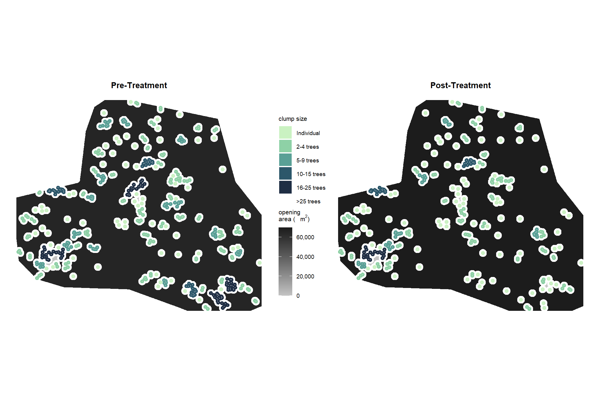

Section 3 UAS Tree Spatial Arrangement and ICO Example
In this section, we’ll outline the steps needed to start with a UAS tree list, identify tree clump grouping, set prescription targets and generate cut/leave trees to define a prescription.
3.1 Example Tree Clump Grouping
Let’s go through the tree clump grouping process for a single stand
#########################
#########################
# what is overstory?
#########################
#########################
#!!!!! fill in one...if both filled in will use DBH
# determine overstory by height
ostory_ht_m = as.numeric(NA) # m = ft / 3.281
# determine overstory by diameter
ostory_dbh_cm = 6*2.54 # cm = in * 2.54
#########################
#########################
# clump spacing
#########################
#########################
# maximum distance between trees for determining tree clumps
# stems within 6 m of one another were considered to have the potential for developing interlocking crowns
tree_clump_dist_m = 6Check the stand location
# where is this
mapview::mapview(
stand_sf
, layer.name = "stand", label = FALSE, legend = FALSE, popup = FALSE
)stand + orthomosaic
# PLOT IT
ortho_plt_fn(stand = stand_sf) +
labs(
subtitle = "\nstand boundary\n"
# subtitle = "<span style='color:gray22;'><b><i>stand boundary</i></b></span>"
) +
theme(
plot.subtitle = element_text(size = 9.5, color = "gray22", hjust = 0.5, face = "bold")
)# save it
ggplot2::ggsave(paste0(delivery_dir, "/saf_01.jpeg"), dpi = "print", height = 7, width = 7, device = "jpeg")we obtained a DTM from the point cloud which was used to height-normalize the point cloud
# dtm
dtm_temp = dtm_rast %>%
terra::crop(
stand_sf %>%
terra::vect()
) %>%
terra::mask(
stand_sf %>%
terra::vect()
) %>%
terra::aggregate(fact = 2, fun = "mean", na.rm = T) %>%
`*`(3.281) %>% # transform to feet
as.data.frame(xy=T) %>%
rename(f=3)
# plot it
plt_dtm_temp = ortho_plt_fn(stand = stand_sf) +
# dtm
ggnewscale::new_scale_fill() +
geom_tile(
data = dtm_temp
, mapping = aes(x = x, y = y, fill = f)
, na.rm = T
) +
harrypotter::scale_fill_hp("hufflepuff", alpha = 0.85, labels = scales::comma) +
labs(fill = "DTM (ft)") +
theme(
legend.text = element_text(size = 5.5, angle = 40, hjust = 0.7)
)
# PLOT IT
plt_dtm_temp# save it
ggplot2::ggsave(paste0(delivery_dir, "/saf_02.jpeg"), dpi = "print", height = 7, width = 7, device = "jpeg")plot with CHM
# chm
chm_temp = chm_rast %>%
terra::crop(
stand_sf %>%
terra::vect()
) %>%
terra::mask(
stand_sf %>%
terra::vect()
) %>%
terra::aggregate(fact = 2, fun = "mean", na.rm = T) %>%
`*`(3.281) %>% # transform to feet
as.data.frame(xy=T) %>%
rename(f=3)
# plot it
plt_chm_temp = ortho_plt_fn(stand = stand_sf) +
# chm
ggnewscale::new_scale_fill() +
geom_tile(
data = chm_temp
, mapping = aes(x = x, y = y, fill = f)
, na.rm = T
) +
harrypotter::scale_fill_hp("gryffindor", alpha = 0.85) +
labs(fill = "CHM (ft)")
# PLOT IT
plt_chm_temp# save it
ggplot2::ggsave(paste0(delivery_dir, "/saf_03.jpeg"), dpi = "print", height = 7, width = 7, device = "jpeg")3.1.1 ITD
individual tree crowns and heights detected from UAS-SfM
plt_crowns1 <-
ortho_plt_fn(stand = stand_sf) +
# treetops
ggnewscale::new_scale_fill() +
geom_sf(
data = crowns_sf_with_dbh %>%
dplyr::inner_join(
treetops_sf_with_dbh %>%
sf::st_intersection(stand_sf) %>%
sf::st_drop_geometry() %>%
dplyr::select(treeID)
)
, mapping = aes(fill = tree_height_ft)
, color = "gray55"
, lwd = 0.3
) +
harrypotter::scale_fill_hp("gryffindor", alpha = 0.85, limits = c(4,85)) +
labs(fill = "Individual Tree\nHt. (ft)")
plt_crowns1# save it
ggplot2::ggsave(paste0(delivery_dir, "/saf_04.jpeg"), dpi = "print", height = 7, width = 7, device = "jpeg")individual tree top points and height detected from UAS-SfM
plt_ttops_temp = ortho_plt_fn(stand = stand_sf) +
# treetops
geom_sf(
data = treetops_sf_with_dbh %>% sf::st_intersection(stand_sf)
, mapping = aes(color = tree_height_ft)
, size = 1.6
) +
harrypotter::scale_color_hp("gryffindor") +
labs(color = "Individual Tree\nHt. (ft)")
# PLOT IT
plt_ttops_temp# save it
ggplot2::ggsave(paste0(delivery_dir, "/saf_05.jpeg"), dpi = "print", height = 7, width = 7, device = "jpeg")overstory/understory trees
plt_ttops_temp = ortho_plt_fn(stand = stand_sf) +
# treetops
geom_sf(
data = treetops_sf_with_dbh %>% sf::st_intersection(stand_sf) %>%
dplyr::mutate(
ostory = dplyr::case_when(
!is.na(as.numeric(ostory_dbh_cm)) &
dbh_cm>=as.numeric(ostory_dbh_cm) ~ "overstory"
, !is.na(as.numeric(ostory_ht_m)) &
tree_height_m>=as.numeric(ostory_ht_m) ~ "overstory"
, is.na(as.numeric(ostory_dbh_cm)) &
is.na(as.numeric(ostory_ht_m)) &
dbh_cm>=5*2.54 ~ "overstory"
, T ~ "understory"
)
, ostory_sz = ifelse(ostory=="overstory",0.51,0.5)
)
, mapping = aes(color = ostory)
, size = 1.6
) +
harrypotter::scale_color_hp_d("gryffindor", direction = -1) +
labs(color = "") +
theme(legend.key = element_rect(color = NA, fill = NA), legend.margin = margin(6.5,0,6.5,0)) +
guides(size = "none", color = guide_legend(override.aes = list(size = 5)))
# PLOT IT
plt_ttops_temp3.1.2 Tree Groups
Identify tree groups using dbscan::dbscan() as outlined by Hanna et al. (2024):
To evaluate the ability of UAS-extracted trees to characterize horizontal and vertical heterogeneity tree arrangement, clusters of trees were identifed within the stem-mapped and UAS trees. A cluster of trees was defned as two or more trees with the potential for interlocking crowns. Overstory trees on the stem maps generally had a crown radius of ~3.0 m, so stems within 6 m of one another were considered to have the potential for developing interlocking crowns. Density-based spatial clustering of applications with noise (DBSCAN) from the fpr package (Hahsler et al., 2019) in R was used to assign trees to unique clusters, including individual trees that were assigned by themselves if they did not have the potential to develop interlocking crowns (>6 m from another tree). (p. 529)
To analyze the efect of tree aggregation on tree attributes, the identifed trees and clusters were designated as an “individual” or as a cluster consisting of 2-4, 5-9, 10-15, and >15 trees. We then calculated the number of clusters, the percent of stand basal area, the height coefcient of variation, and the canopy area within the cluster size classes for each site. (p. 529-530)
With respect to clump size groupings, Churchill et al. (2016) note that:
Proportions for clump sizes should be lumped into four or five bins for operational simplicity. We use 4 or 5 bins (Fig 5): individual trees, small clumps (2-4 trees), medium clumps (5-9 trees), and large clumps (10-20+ trees). Note that when instructed to leave a large clump (e.g. 10-20 trees), marking crews often have difficulty leaving the upper end of the size range (e.g. an 18, 19, or 20 tree clump). Thus adding a fifth bin for “super clumps” may be necessary (e.g. 15-20 trees or 20-25+ trees), especially if the upper size range of clumps is desired. (p. 12-13)
# filter trees spatially based on unit id
ttops_temp = treetops_sf_with_dbh %>% sf::st_intersection(stand_sf) %>%
dplyr::mutate(
ostory = dplyr::case_when(
!is.na(as.numeric(ostory_dbh_cm)) &
dbh_cm>=as.numeric(ostory_dbh_cm) ~ "overstory"
, !is.na(as.numeric(ostory_ht_m)) &
tree_height_m>=as.numeric(ostory_ht_m) ~ "overstory"
, is.na(as.numeric(ostory_dbh_cm)) &
is.na(as.numeric(ostory_ht_m)) &
dbh_cm>=5*2.54 ~ "overstory"
, T ~ "understory"
)
) %>%
dplyr::filter(ostory=="overstory") %>%
dplyr::mutate(
X = sf::st_coordinates(.)[,1] %>% as.numeric()
, Y = sf::st_coordinates(.)[,2] %>% as.numeric()
)
#############################################################################
##### Identify clusters in each stem map plot #####
#############################################################################
### Place trees into clusters using an inter-tree distance of 6 m
my_dbscan_temp = ttops_temp %>%
sf::st_drop_geometry() %>%
dplyr::select(X,Y) %>%
dbscan::dbscan(eps = tree_clump_dist_m, minPts = 2)
# my_dbscan_temp %>% str()
### append cluster ID to trees
ttops_temp$dbscan_cluster = my_dbscan_temp$cluster
# ttops_temp$cluster %>% summary()
# ttops_temp %>% sf::st_drop_geometry() %>% dplyr::count(cluster) %>% dplyr::arrange(desc(n)) %>% dplyr::slice_head(n=11)
### cluster metrics
ttops_temp = ttops_temp %>%
dplyr::group_by(dbscan_cluster) %>%
dplyr::mutate(
# unique dbscan_cluster for individuals
clump_id = dplyr::case_when(
dbscan_cluster == 0 ~ max(my_dbscan_temp$cluster)+dplyr::row_number()
, T ~ dbscan_cluster
) %>%
factor()
) %>%
dplyr::group_by(clump_id) %>%
dplyr::mutate(
dbscan_cluster = factor(dbscan_cluster)
, clump_n_trees = dplyr::n()
, clump_n_trees_grp = cut(
clump_n_trees
, breaks = c(0,1,4,9,15,25,Inf) # where to break the clump size groups
, labels = c("Individual","2-4 trees","5-9 trees","10-15 trees","16-25 trees",">25 trees") # what to name the clump size groups
) %>%
factor(
ordered = T
, levels = c("Individual","2-4 trees","5-9 trees","10-15 trees","16-25 trees",">25 trees") # what to name the clump size groups
)
) %>%
dplyr::ungroup()
# what?
ttops_temp %>% dplyr::glimpse()## Rows: 407
## Columns: 39
## $ treeID <chr> "105_454005.9_4472005.6", "107_454014.1_4472…
## $ tree_height_m <dbl> 12.319, 13.767, 16.713, 18.059, 15.400, 14.4…
## $ crown_area_m2 <dbl> 15.1875, 14.5000, 26.5625, 11.5000, 17.0625,…
## $ comp_trees_per_ha <dbl> 254.7643, 509.5286, 382.1465, 509.5286, 382.…
## $ comp_relative_tree_height <dbl> 77.27872, 82.37301, 100.00000, 97.74302, 84.…
## $ comp_dist_to_nearest_m <dbl> 4.506939, 2.500000, 2.500000, 2.500000, 2.75…
## $ mean_crown_ht_m <dbl> 10.770600, 11.273027, 13.292375, 13.898620, …
## $ median_crown_ht_m <dbl> 11.446000, 11.748157, 13.908000, 13.442000, …
## $ min_crown_ht_m <dbl> 6.277000, 5.790000, 6.430000, 9.147125, 3.85…
## $ reg_est_dbh_cm <dbl> 22.03351, 25.57045, 32.89821, 36.49830, 29.5…
## $ reg_est_lower_dbh_cm <dbl> 12.067496, 14.056533, 18.049590, 20.113466, …
## $ reg_est_upper_dbh_cm <dbl> 34.58112, 39.68120, 51.54354, 56.85690, 45.9…
## $ is_training_data <lgl> FALSE, FALSE, FALSE, FALSE, FALSE, FALSE, FA…
## $ dbh_cm <dbl> 22.03351, 25.57045, 32.89821, 36.49830, 29.5…
## $ dbh_m <dbl> 0.2598654, 0.2931341, 0.3730744, 0.4162416, …
## $ radius_m <dbl> 0.12993271, 0.14656707, 0.18653721, 0.208120…
## $ basal_area_m2 <dbl> 0.05303796, 0.06748740, 0.10931527, 0.136075…
## $ reg_est_dbh_in <dbl> 8.681202, 10.074757, 12.961896, 14.380331, 1…
## $ reg_est_lower_dbh_in <dbl> 4.754593, 5.538274, 7.111539, 7.924705, 6.51…
## $ reg_est_upper_dbh_in <dbl> 13.62496, 15.63439, 20.30815, 22.40162, 18.1…
## $ dbh_in <dbl> 8.681202, 10.074757, 12.961896, 14.380331, 1…
## $ tree_height_ft <dbl> 40.40632, 45.15576, 54.81864, 59.23352, 50.5…
## $ comp_dist_to_nearest_ft <dbl> 14.782760, 8.200000, 8.200000, 8.200000, 9.0…
## $ mean_crown_ht_ft <dbl> 35.32757, 36.97553, 43.59899, 45.58748, 43.5…
## $ median_crown_ht_ft <dbl> 37.54288, 38.53396, 45.61824, 44.08976, 46.3…
## $ min_crown_ht_ft <dbl> 20.58856, 18.99120, 21.09040, 30.00257, 12.6…
## $ dbh_ft <dbl> 0.8523585, 0.9614800, 1.2236841, 1.3652723, …
## $ radius_ft <dbl> 0.4261793, 0.4807400, 0.6118420, 0.6826362, …
## $ comp_trees_per_ac <dbl> 103.17954, 206.35908, 154.76931, 206.35908, …
## $ crown_area_ft2 <dbl> 163.47825, 156.07800, 285.91875, 123.78600, …
## $ basal_area_ft2 <dbl> 0.5709006, 0.7264344, 1.1766695, 1.4647195, …
## $ geom <POINT [m]> POINT (454005.9 4472006), POINT (45401…
## $ ostory <chr> "overstory", "overstory", "overstory", "over…
## $ X <dbl> 454005.9, 454014.1, 454016.1, 454051.6, 4540…
## $ Y <dbl> 4472006, 4472004, 4472003, 4471997, 4471994,…
## $ dbscan_cluster <fct> 0, 1, 1, 2, 2, 0, 0, 0, 3, 3, 3, 4, 3, 4, 3,…
## $ clump_id <fct> 73, 1, 1, 2, 2, 74, 75, 76, 3, 3, 3, 4, 3, 4…
## $ clump_n_trees <int> 1, 2, 2, 2, 2, 1, 1, 1, 7, 7, 7, 8, 7, 8, 7,…
## $ clump_n_trees_grp <ord> Individual, 2-4 trees, 2-4 trees, 2-4 trees,…plot overstory tree clumps
plt_grps_temp = ortho_plt_fn(stand = stand_sf) +
# treetops
geom_sf(
data = ttops_temp
, mapping = aes(color = dbscan_cluster)
, size = 1.6
) +
scale_color_manual(values = c(
"white"
, # get random list of colors from viridis and avoid whites
c(
viridis::turbo(length(unique(ttops_temp$dbscan_cluster))/2 %>% round())
, viridis::plasma(length(unique(ttops_temp$dbscan_cluster))/2 %>% round(), end = 0.95)
, viridis::viridis(length(unique(ttops_temp$dbscan_cluster))/2 %>% round(), end = 0.9)
, viridis::cividis(length(unique(ttops_temp$dbscan_cluster))/2 %>% round(), end = 0.9)
) %>%
sample() %>%
.[1:length(unique(ttops_temp$dbscan_cluster))-1]
)
) +
# scale_color_viridis_d("turbo") +
labs(subtitle = "\n overstory tree groups\n(individual trees in white)") +
theme(
legend.position = "none"
, plot.subtitle = element_text(size = 9.5, hjust = 0.5, face = "bold")
)
# PLOT IT
plt_grps_temp# save it
ggplot2::ggsave(paste0(delivery_dir, "/saf_07.jpeg"), dpi = "print", height = 7, width = 7, device = "jpeg")and plot overstory tree clumps by number of trees
plt_grps_temp = ortho_plt_fn(stand = stand_sf) +
# treetops
geom_sf(
data = ttops_temp
, mapping = aes(color = clump_n_trees_grp)
, size = 1.6
) +
harrypotter::scale_color_hp_d("always", name = "clump size", drop = F) +
labs(color = "") +
theme(legend.key = element_rect(color = NA, fill = NA), legend.margin = margin(6.5,0,6.5,0)) +
guides(size = "none", color = guide_legend(override.aes = list(size = 5)))
# PLOT IT
plt_grps_temp# save it
ggplot2::ggsave(paste0(delivery_dir, "/saf_08.jpeg"), dpi = "print", height = 7, width = 7, device = "jpeg")if we want to plot the groups with the tree crowns we can do that too
plt_grps_temp = ortho_plt_fn(stand = stand_sf) +
# treetops
geom_sf(
data = crowns_sf_with_dbh %>%
dplyr::inner_join(
ttops_temp %>%
sf::st_drop_geometry() %>%
dplyr::select(treeID, clump_n_trees_grp)
, by = "treeID"
)
, mapping = aes(fill = clump_n_trees_grp)
, size = 1.6
) +
harrypotter::scale_fill_hp_d("always", name = "clump size", drop = F) +
labs(fill = "") +
theme(legend.key = element_rect(fill = NA, color = NA), legend.margin = margin(6.5,0,6.5,0)) +
guides(size = "none", fill = guide_legend(override.aes = list(size = 5)))
# PLOT IT
plt_grps_temp3.1.3 Within Clump Distance
Determine nearest neighbor distance for the stand and within clusters. Some combination of these metrics has been used to describe relative aggregation. (source?)
Calculate the distance to the nearest tree within each clump
ttops_temp =
ttops_temp %>%
dplyr::group_by(clump_id) %>%
tidyr::nest() %>%
dplyr::mutate(
distance_clump_nn_m = purrr::map(data, function(x){
# get index of nearest neighbor
i = sf::st_nearest_feature(x)
# get dist
d = sf::st_distance(x, x[i,], by_element=TRUE) %>% as.numeric()
return(d)
})
) %>%
tidyr::unnest(cols = c(data, distance_clump_nn_m)) %>%
sf::st_set_geometry("geom") %>% # set it cuz it got lost
dplyr::ungroup()
# ggplot() + geom_point(aes(x=X,y=Y,color = distance_clump_nn_m)) + theme_light()plot it
ortho_plt_fn(stand = stand_sf) +
# treetops
geom_sf(
data = ttops_temp
, mapping = aes(color = distance_clump_nn_m)
, size = 1.6
) +
# scale_color_viridis_c(option="viridis", na.value = "white") +
harrypotter::scale_color_hp("hufflepuff", na.value = "white") +
labs(color = "within clump\nN.N. dist. (m)")3.1.3.1 Create function to get tree list with clumps
first, create a general function to apply dbscan::dbscan to point data of class sf
With respect to clump size groupings, Churchill et al. (2016) note that:
Proportions for clump sizes should be lumped into four or five bins for operational simplicity. We use 4 or 5 bins (Fig 5): individual trees, small clumps (2-4 trees), medium clumps (5-9 trees), and large clumps (10-20+ trees). Note that when instructed to leave a large clump (e.g. 10-20 trees), marking crews often have difficulty leaving the upper end of the size range (e.g. an 18, 19, or 20 tree clump). Thus adding a fifth bin for “super clumps” may be necessary (e.g. 15-20 trees or 20-25+ trees), especially if the upper size range of clumps is desired. (p. 12-13)
In their prescription worksheet Excel file Churchill et al. (2016) have the following group sizes: 1, 2-4 (Mean clump size: 3), 5-9 (7), 10-15 (12), 16-25 (20). To be able to cut clumps down to achieve the desired largest “16-25” group, we’ll add a “super” group with >25 trees. This same principle can be applied if you desire a clump size group larger than this (i.e. 25-35), whereby a group above this should be added so that the resulting prescription cuts the “super” group to ensure the proper sizing of the desired largest group.
# function to clump data that are sf points
st_clump_points <- function(
x # point data of class `sf`
, clump_dist_m = 6 # size (radius) of the epsilon neighborhood = maximum distance between points to add to clump
, clump_breaks = c(0,1,4,9,15,25,Inf) # where to break the clump size groups
, clump_labels = c("Individual","2-4 trees","5-9 trees","10-15 trees","16-25 trees",">25 trees") # what to name the clump size groups
) {
# get points as x,y
point_clusters = x %>%
dplyr::mutate(
X = sf::st_coordinates(.)[,1] %>% as.numeric()
, Y = sf::st_coordinates(.)[,2] %>% as.numeric()
)
#############################################################################
##### Identify clusters in each stem map plot #####
#############################################################################
### Place trees into clusters using an inter-tree distance of 6 m
my_dbscan_temp = point_clusters %>%
sf::st_drop_geometry() %>%
dplyr::select(X,Y) %>%
dbscan::dbscan(eps = clump_dist_m, minPts = 2)
# my_dbscan_temp %>% str()
### append cluster ID to tree points
point_clusters$dbscan_cluster = my_dbscan_temp$cluster
# point_clusters$cluster %>% summary()
# point_clusters %>% sf::st_drop_geometry() %>% dplyr::count(cluster) %>% dplyr::arrange(desc(n)) %>% dplyr::slice_head(n=11)
### cluster metrics
point_clusters = point_clusters %>%
dplyr::group_by(dbscan_cluster) %>%
dplyr::mutate(
# unique dbscan_cluster for individuals
clump_id = dplyr::case_when(
dbscan_cluster == 0 ~ max(my_dbscan_temp$cluster)+dplyr::row_number()
, T ~ dbscan_cluster
) %>%
factor()
) %>%
dplyr::group_by(clump_id) %>%
dplyr::mutate(
dbscan_cluster = factor(dbscan_cluster)
, clump_n_trees = dplyr::n()
, clump_n_trees_grp = cut(
clump_n_trees
, breaks = clump_breaks
, labels = clump_labels
) %>%
factor(
ordered = T
, levels = clump_labels
)
) %>%
dplyr::ungroup() %>%
dplyr::mutate(tree_clump_dist_m = clump_dist_m)
# return
return(point_clusters)
}function specific to this project to filter the tree points attached to harvest bounds and apply the st_clump_points function
# create function to pass a unit id and return list of trees with clump groupings
get_tree_clumps = function(
tree_clump_dist_m=6
, ostory_ht_m = as.numeric(NA)
, ostory_dbh_cm = as.numeric(NA)
){
# check ostory definition
if(is.na(as.numeric(ostory_dbh_cm)) & is.na(as.numeric(ostory_ht_m))){
warning("`ostory_dbh_cm` and `ostory_ht_m` are not set...using `ostory_dbh_cm` = 12.7")
ostory_dbh_cm = 5*2.54
# filter data
ttops_temp = treetops_sf_with_dbh %>% sf::st_intersection(stand_sf) %>%
dplyr::filter(
dbh_cm>=as.numeric(ostory_dbh_cm)
)
}else if(!is.na(as.numeric(ostory_dbh_cm))){
# filter data
ttops_temp = treetops_sf_with_dbh %>% sf::st_intersection(stand_sf) %>%
dplyr::filter(
dbh_cm>=as.numeric(ostory_dbh_cm)
)
}else{
# filter data
ttops_temp = treetops_sf_with_dbh %>% sf::st_intersection(stand_sf) %>%
dplyr::filter(
tree_height_m>=as.numeric(ostory_ht_m)
)
}
### Place trees into clusters using an inter-tree distance of 6 m
ttops_temp = st_clump_points(
x = ttops_temp
, clump_dist_m = tree_clump_dist_m
)
# add distance to nearest within clump
ttops_temp =
ttops_temp %>%
dplyr::group_by(clump_id) %>%
tidyr::nest() %>%
dplyr::mutate(
distance_clump_nn_m = purrr::map(data, function(x){
# get index of nearest neighbor
i = sf::st_nearest_feature(x)
# get dist
d = sf::st_distance(x, x[i,], by_element=TRUE) %>% as.numeric()
return(d)
})
) %>%
tidyr::unnest(cols = c(data, distance_clump_nn_m)) %>%
sf::st_set_geometry("geom") %>% # set it cuz it got lost
dplyr::ungroup() %>%
dplyr::mutate(
tree_clump_dist_m = tree_clump_dist_m
, clump_id_duplicate = clump_id # can use this even after nesting data by clump_id
# , ostory_ht_m = ifelse(is.na(ostory_ht_m), as.numeric(NA), as.numeric(ostory_ht_m))
# , ostory_dbh_cm = ifelse(is.na(ostory_dbh_cm), as.numeric(NA), as.numeric(ostory_dbh_cm))
)
# return
return(ttops_temp)
}
# call it
ttops_temp = get_tree_clumps(
tree_clump_dist_m = tree_clump_dist_m
, ostory_dbh_cm = ostory_dbh_cm
)## Warning: attribute variables are assumed to be spatially constant throughout
## all geometries3.1.4 Clump Polygons and Metrics
Churchill et al. (2016) provide instructions for implementing the clump identification (Plotkin et al. 2002) in ArcGIS:
Use the Buffer tool (in the Proximity toolset within the Analysis toolbox) to create a buffer of distance d/2, one half the inter-tree distance, around each point. This quantity d/2 is meant to approximate the crown radius of a “typical” overstory tree. Set the Dissolve Type option to ALL, which dissolves overlapping buffers, creating a reduced set of spatially non-overlapping polygons stored as a multipart polygon feature…Sanchez Meador et al. (2011) provide some useful examples of how clump attributes can be summarized…The method described here can be modified to use measured or modeled crown radii for each tree in place of d/2 (p.36)
# create function to pass a return from st_clump_points/get_tree_clumps and create clump polygons with summary stats
get_clump_summary = function(dta){
# get tree_clump_dist_m
tree_clump_dist_m = min(dta$tree_clump_dist_m, na.rm = T)
# create clump polys and summary
clump_polys_temp =
dta %>%
dplyr::ungroup() %>%
sf::st_set_geometry("geometry") %>%
sf::st_buffer(tree_clump_dist_m/2) %>%
dplyr::group_by(clump_id, dbscan_cluster, clump_n_trees_grp) %>%
dplyr::summarise(
# union buffered tree points
geometry = sf::st_union(geometry)
# summary metrics
, n_trees = dplyr::n_distinct(treeID)
, mean_dbh_cm = mean(dbh_cm, na.rm = T)
, mean_tree_height_m = mean(tree_height_m, na.rm = T)
, loreys_height_m = sum(basal_area_m2*tree_height_m, na.rm = T) / sum(basal_area_m2, na.rm = T)
, basal_area_m2 = sum(basal_area_m2, na.rm = T)
, sum_dbh_cm_sq = sum(dbh_cm^2, na.rm = T)
, .groups = "drop_last"
) %>%
dplyr::ungroup() %>%
sf::st_make_valid() %>%
dplyr::mutate(
clump_area_ha = sf::st_area(geometry) %>% as.numeric() %>% `/`(10000)
, trees_per_ha = (n_trees/clump_area_ha)
, basal_area_m2_per_ha = (basal_area_m2/clump_area_ha)
, pct_stand_basal_area = basal_area_m2/sum(basal_area_m2)
, pct_stand_n_trees = n_trees/sum(n_trees)
, qmd_cm = sqrt(sum_dbh_cm_sq/n_trees)
) %>%
dplyr::select(-c(sum_dbh_cm_sq)) %>%
# convert to imperial units
calc_imperial_units_fn() %>%
dplyr::mutate(tree_clump_dist_m = tree_clump_dist_m)
# calculate distance between clumps
clump_polys_temp = clump_polys_temp %>%
dplyr::mutate(
nearest = sf::st_nearest_feature(clump_polys_temp)
, distance_nearest_clump_m = sf::st_distance(
clump_polys_temp
, clump_polys_temp[nearest,]
, by_element=TRUE
) %>%
as.numeric()
) %>%
dplyr::select(-c(nearest))
# return
return(clump_polys_temp)
}
# get it
# get_clump_summary(
# dta = get_tree_clumps(tree_clump_dist_m = tree_clump_dist_m)
# )
clump_polys_temp = get_clump_summary(ttops_temp)
# what?
clump_polys_temp %>% dplyr::glimpse()## Rows: 140
## Columns: 25
## $ clump_id <fct> 73, 74, 75, 76, 77, 78, 79, 80, 81, 82, 83, 8…
## $ dbscan_cluster <fct> 0, 0, 0, 0, 0, 0, 0, 0, 0, 0, 0, 0, 0, 0, 0, …
## $ clump_n_trees_grp <ord> Individual, Individual, Individual, Individua…
## $ geometry <POLYGON [m]> POLYGON ((454008.9 4472006,..., POLYG…
## $ n_trees <int> 1, 1, 1, 1, 1, 1, 1, 1, 1, 1, 1, 1, 1, 1, 1, …
## $ mean_dbh_cm <dbl> 22.03351, 27.22031, 17.21324, 29.36832, 17.00…
## $ mean_tree_height_m <dbl> 12.319, 14.453, 10.182, 15.274, 10.106, 21.87…
## $ loreys_height_m <dbl> 12.319, 14.453, 10.182, 15.274, 10.106, 21.87…
## $ basal_area_m2 <dbl> 0.05303796, 0.07461986, 0.03733884, 0.0857277…
## $ clump_area_ha <dbl> 0.002826142, 0.002826142, 0.002826142, 0.0028…
## $ trees_per_ha <dbl> 353.8393, 353.8393, 353.8393, 353.8393, 353.8…
## $ basal_area_m2_per_ha <dbl> 18.76692, 26.40344, 13.21195, 30.33385, 12.89…
## $ pct_stand_basal_area <dbl> 0.0016285232, 0.0022911922, 0.0011464838, 0.0…
## $ pct_stand_n_trees <dbl> 0.002457002, 0.002457002, 0.002457002, 0.0024…
## $ qmd_cm <dbl> 22.03351, 27.22031, 17.21324, 29.36832, 17.00…
## $ mean_dbh_in <dbl> 8.681202, 10.724804, 6.782017, 11.571119, 6.6…
## $ qmd_in <dbl> 8.681202, 10.724804, 6.782017, 11.571119, 6.6…
## $ mean_tree_height_ft <dbl> 40.40632, 47.40584, 33.39696, 50.09872, 33.14…
## $ loreys_height_ft <dbl> 40.40632, 47.40584, 33.39696, 50.09872, 33.14…
## $ basal_area_ft2_per_ac <dbl> 81.80499, 115.09259, 57.59089, 132.22525, 56.…
## $ trees_per_ac <dbl> 143.3049, 143.3049, 143.3049, 143.3049, 143.3…
## $ clump_area_ac <dbl> 0.006983396, 0.006983396, 0.006983396, 0.0069…
## $ basal_area_ft2 <dbl> 0.5709006, 0.8032082, 0.4019153, 0.9227736, 0…
## $ tree_clump_dist_m <dbl> 6, 6, 6, 6, 6, 6, 6, 6, 6, 6, 6, 6, 6, 6, 6, …
## $ distance_nearest_clump_m <dbl> 2.3446401, 7.3671213, 24.1966696, 3.3007035, …# do these numbers match
identical(
# clump polys
nrow(clump_polys_temp)
# clumps in tree list data
, ttops_temp %>% dplyr::distinct(clump_id) %>% nrow()
)## [1] TRUEplot it
ortho_plt_fn(stand = stand_sf) +
# clumps
ggnewscale::new_scale_fill() +
geom_sf(
data = clump_polys_temp
, mapping = aes(fill = dbscan_cluster)
, color = NA, alpha = 0.9
, size = 1.6
) +
scale_fill_manual(values = c(
"white"
, # get random list of colors from viridis and avoid whites
c(
viridis::turbo(length(unique(ttops_temp$dbscan_cluster))/2 %>% round())
, viridis::plasma(length(unique(ttops_temp$dbscan_cluster))/2 %>% round(), end = 0.95)
, viridis::viridis(length(unique(ttops_temp$dbscan_cluster))/2 %>% round(), end = 0.9)
, viridis::cividis(length(unique(ttops_temp$dbscan_cluster))/2 %>% round(), end = 0.9)
) %>%
sample() %>%
.[1:length(unique(ttops_temp$dbscan_cluster))-1]
)
) +
labs(subtitle = "\n overstory tree group polygons\n(individual trees in white)") +
theme(
legend.position = "none"
, plot.subtitle = element_text(size = 9.5, hjust = 0.5, face = "bold")
)check the distance between clumps
ortho_plt_fn(stand = stand_sf) +
ggnewscale::new_scale_fill() +
geom_sf(
data = clump_polys_temp
, mapping = aes(fill = distance_nearest_clump_m)
, size = 1.6, color = NA
) +
harrypotter::scale_fill_hp("mischief", direction = -1) +
labs(fill = "nearest clump\ndist. (m)")and plot the clump group size
ortho_plt_fn(stand = stand_sf) +
ggnewscale::new_scale_fill() +
geom_sf(
data = clump_polys_temp
, mapping = aes(fill = clump_n_trees_grp)
, size = 1.6, color = NA
) +
harrypotter::scale_fill_hp_d("always", name = "clump size", drop = F) +
labs(fill = "") +
theme(legend.key = element_rect(fill = NA, color = NA), legend.margin = margin(6.5,0,6.5,0)) +
guides(size = "none", fill = guide_legend(override.aes = list(size = 5)))3.1.5 Clump Spacing
See Churchill et al. (2016) Figure 4 (p.10) and Matonis and Binkley (2018) who “calculated coverage of mosaic-meadows (percentage of stand > 6 m from overstory trees)” (p. 124)
Since we already buffered the tree points to approximate the crown radius, we’ll continue to use our \(d/2\) where \(d\) is maximum distance between trees for determining tree clumps and is meant to approximate the crown radius of a “typical” overstory tree
# create function to pass a return from get_clump_summary() and get a distance raster
get_clump_dist_rast = function(dta){
# get tree_clump_dist_m
tree_clump_dist_m = min(dta$tree_clump_dist_m, na.rm = T)
# rasterize the clump polygons and then calculate distance between clumps as raster
dist_rast =
terra::rasterize(
x = dta %>% terra::vect()
, y = dta %>%
terra::vect() %>%
terra::rast(res = 0.2)
) %>%
terra::distance() %>%
# crop it to stand extent
terra::crop(
stand_sf %>%
terra::vect()
) %>%
terra::mask(
stand_sf %>%
terra::vect()
)
######### part 2
# now create openings vector data
openings_vect =
dist_rast %>%
terra::classify(rcl = c(tree_clump_dist_m/2,Inf), others = NA, include.lowest = T) %>%
terra::as.polygons(na.rm = T) %>%
sf::st_as_sf() %>%
sf::st_cast("POLYGON") %>%
dplyr::mutate(layer = dplyr::row_number()) %>%
dplyr::mutate(
openining_area_m2 = sf::st_area(geometry) %>% as.numeric()
, tree_clump_dist_m = tree_clump_dist_m
)
# return
return(list(dist_rast = dist_rast, openings_vect = openings_vect))
}
# get it
dist_rast_temp = get_clump_dist_rast(clump_polys_temp)
dist_rast_temp## $dist_rast
## class : SpatRaster
## dimensions : 1619, 1878, 1 (nrow, ncol, nlyr)
## resolution : 0.2, 0.2 (x, y)
## extent : 453830.9, 454206.5, 4471685, 4472009 (xmin, xmax, ymin, ymax)
## coord. ref. : NAD83 / UTM zone 13N (EPSG:26913)
## source(s) : memory
## name : layer
## min value : 0.00000
## max value : 40.85976
##
## $openings_vect
## Simple feature collection with 15 features and 3 fields
## Geometry type: POLYGON
## Dimension: XY
## Bounding box: xmin: 453830.9 ymin: 4471685 xmax: 454206.5 ymax: 4472009
## Projected CRS: NAD83 / UTM zone 13N
## First 10 features:
## layer geometry openining_area_m2 tree_clump_dist_m
## 1 1 POLYGON ((454020.1 4471861,... 0.04 6
## 1.1 2 POLYGON ((454018.7 4471860,... 0.04 6
## 1.2 3 POLYGON ((454018.5 4471859,... 9.40 6
## 1.3 4 POLYGON ((454018.7 4471829,... 0.04 6
## 1.4 5 POLYGON ((453876.1 4471809,... 0.04 6
## 1.5 6 POLYGON ((453873.5 4471806,... 0.04 6
## 1.6 7 POLYGON ((453880.1 4471781,... 0.08 6
## 1.7 8 POLYGON ((453864.9 4471764,... 0.04 6
## 1.8 9 POLYGON ((453903.9 4471762,... 0.04 6
## 1.9 10 POLYGON ((453894.3 4471762,... 0.04 6plot the distance raster and openings vector data we just got with overlaid tree clumps and tree points
plt_fnl_temp =
ggplot() +
# distance
geom_tile(
data = dist_rast_temp$dist_rast %>% terra::aggregate(2, cores = 4) %>% as.data.frame(xy = T) %>% rename(f=3)
, mapping = aes(x=x, y=y, fill = f)
) +
harrypotter::scale_fill_hp(
"mischief"
, na.value = "transparent"
, name = "distance to\nnearest tree (m)"
, limits = c(0,45)
) +
# openings
geom_sf(data = dist_rast_temp$openings_vect, mapping = aes(color = openining_area_m2), fill = NA) +
scale_color_gradient(
low = "gray77", high = "gray11"
, labels = scales::comma_format(accuracy = 1)
, name = latex2exp::TeX("opening\narea ($\\m^2$)")
, limits = c(0,70000)
) +
# clumps
ggnewscale::new_scale_fill() +
geom_sf(
data = clump_polys_temp
, mapping = aes(fill = clump_n_trees_grp)
, color = NA
) +
harrypotter::scale_fill_hp_d("always", name = "clump size", drop = F) +
# tree points
geom_sf(data = ttops_temp, color = "gray88", shape = ".") +
theme_void() +
theme(plot.subtitle = element_text(size = 10, hjust = 0.5, face = "bold"), legend.title=element_text(size=8), legend.text=element_text(size = 7))
# plot
plt_fnl_temp# save it
ggplot2::ggsave(paste0(delivery_dir, "/saf_10.jpeg"), dpi = "print", height = 7, width = 7, device = "jpeg")highlight the openings
plt_open_temp =
ggplot() +
# clumps
geom_sf(
data = clump_polys_temp
, mapping = aes(fill = clump_n_trees_grp)
, color = NA
) +
harrypotter::scale_fill_hp_d("always", name = "clump size", drop = F) +
# openings
ggnewscale::new_scale_fill() +
geom_sf(data = dist_rast_temp$openings_vect, mapping = aes(fill = openining_area_m2), color = NA) +
scale_fill_gradient(
low = "gray77", high = "gray11"
, labels = scales::comma_format(accuracy = 1)
, name = latex2exp::TeX("opening\narea ($\\m^2$)")
, limits = c(0,70000)
) +
# tree points
geom_sf(data = ttops_temp, color = "gray88", shape = ".") +
theme_void() +
theme(plot.subtitle = element_text(size = 10, hjust = 0.5, face = "bold"), legend.title=element_text(size=8), legend.text=element_text(size = 7))
# plot
plt_open_tempcombine them?
plt_fnl_temp + (plt_open_temp + theme(legend.position = "none")) &
theme(plot.subtitle = element_text(size = 10, hjust = 0.5, face = "bold"), legend.title=element_text(size=8), legend.text=element_text(size = 7))
3.1.6 Clump Metrics
create a function to summarize by number of tree clump grouping variable
# create a function to summarize by number of tree clump grouping
get_clump_n_trees_grp_summary = function(trees, clumps){
# get area of harvest unit
#...will use this area in the area calculations such that...
#...TPA = trees in a certain group size across the whole stand area
harvest_area_ha = stand_sf %>%
sf::st_as_sf() %>%
dplyr::mutate(harvest_area_ha = sf::st_area(.) %>% as.numeric() %>% `/`(10000)) %>%
dplyr::pull(harvest_area_ha) %>%
.[1]
# collapse and calculate silv metrics
dta = trees %>%
sf::st_drop_geometry() %>%
dplyr::mutate(stand_area_ha = harvest_area_ha) %>%
dplyr::group_by(stand_area_ha,clump_n_trees_grp) %>%
dplyr::summarise(
# summary metrics
n_trees = dplyr::n_distinct(treeID)
, mean_dbh_cm = mean(dbh_cm, na.rm = T)
, mean_tree_height_m = mean(tree_height_m, na.rm = T)
, loreys_height_m = sum(basal_area_m2*tree_height_m, na.rm = T) / sum(basal_area_m2, na.rm = T)
, basal_area_m2 = sum(basal_area_m2, na.rm = T)
, sum_dbh_cm_sq = sum(dbh_cm^2, na.rm = T)
, .groups = "drop_last"
) %>%
dplyr::ungroup() %>%
# attach clump area
dplyr::left_join(
clumps %>%
sf::st_drop_geometry() %>%
dplyr::group_by(clump_n_trees_grp) %>%
dplyr::summarise(
clump_area_ha = sum(clump_area_ha)
, stand_n_clumps = dplyr::n()
, .groups = "drop_last"
) %>%
dplyr::ungroup()
, by = dplyr::join_by(clump_n_trees_grp)
) %>%
dplyr::mutate(
trees_per_ha = (n_trees/stand_area_ha) # (n_trees/clump_area_ha) ... this was not right
, basal_area_m2_per_ha = (basal_area_m2/stand_area_ha) # (basal_area_m2/clump_area_ha) ... this was not right
, qmd_cm = sqrt(sum_dbh_cm_sq/n_trees)
# stand calcs
, stand_trees_per_ha = sum(n_trees)/stand_area_ha
, stand_basal_area_m2 = sum(basal_area_m2)
, stand_basal_area_m2_per_ha = sum(basal_area_m2)/stand_area_ha
, pct_stand_basal_area = basal_area_m2/stand_basal_area_m2
, pct_stand_n_trees = n_trees/sum(n_trees)
, stand_qmd_cm = sqrt(sum(trees$dbh_cm^2, na.rm = T)/sum(n_trees))
) %>%
dplyr::select(-c(sum_dbh_cm_sq)) %>%
# convert to imperial units
calc_imperial_units_fn()
# return
return(dta)
}
# call it
clump_n_trees_grp_summary_temp = get_clump_n_trees_grp_summary(
trees = get_tree_clumps(tree_clump_dist_m = tree_clump_dist_m, ostory_dbh_cm = ostory_dbh_cm)
, clumps = get_clump_summary(
get_tree_clumps(tree_clump_dist_m = tree_clump_dist_m, ostory_dbh_cm = ostory_dbh_cm)
)
)
# what?
clump_n_trees_grp_summary_temp %>% dplyr::glimpse()## Rows: 5
## Columns: 31
## $ stand_area_ha <dbl> 8.991271, 8.991271, 8.991271, 8.991271, 8.…
## $ clump_n_trees_grp <ord> Individual, 2-4 trees, 5-9 trees, 10-15 tr…
## $ n_trees <int> 68, 134, 86, 42, 77
## $ mean_dbh_cm <dbl> 27.99178, 27.00273, 24.49694, 20.37825, 26…
## $ mean_tree_height_m <dbl> 14.61024, 14.26002, 13.21962, 11.56174, 14…
## $ loreys_height_m <dbl> 17.40696, 15.97270, 14.96544, 12.04327, 15…
## $ basal_area_m2 <dbl> 6.694974, 11.491299, 6.026900, 2.123237, 6…
## $ clump_area_ha <dbl> 0.19217763, 0.30282975, 0.16399426, 0.0713…
## $ stand_n_clumps <int> 68, 51, 14, 3, 4
## $ trees_per_ha <dbl> 7.562891, 14.903344, 9.564833, 4.671197, 8…
## $ basal_area_m2_per_ha <dbl> 0.7446082, 1.2780506, 0.6703057, 0.2361443…
## $ qmd_cm <dbl> 29.69610, 28.00751, 25.65050, 20.70925, 27…
## $ stand_trees_per_ha <dbl> 45.26613, 45.26613, 45.26613, 45.26613, 45…
## $ stand_basal_area_m2 <dbl> 32.56814, 32.56814, 32.56814, 32.56814, 32…
## $ stand_basal_area_m2_per_ha <dbl> 3.622195, 3.622195, 3.622195, 3.622195, 3.…
## $ pct_stand_basal_area <dbl> 0.20556822, 0.35283871, 0.18505512, 0.0651…
## $ pct_stand_n_trees <dbl> 0.1670762, 0.3292383, 0.2113022, 0.1031941…
## $ stand_qmd_cm <dbl> 27.02183, 27.02183, 27.02183, 27.02183, 27…
## $ mean_dbh_in <dbl> 11.028762, 10.639077, 9.651796, 8.029032, …
## $ qmd_in <dbl> 11.700261, 11.034959, 10.106297, 8.159443,…
## $ stand_qmd_in <dbl> 10.6466, 10.6466, 10.6466, 10.6466, 10.6466
## $ mean_tree_height_ft <dbl> 47.92157, 46.77287, 43.36034, 37.92250, 46…
## $ loreys_height_ft <dbl> 57.09484, 52.39045, 49.08666, 39.50192, 50…
## $ basal_area_ft2_per_ac <dbl> 3.245747, 5.571023, 2.921863, 1.029353, 3.…
## $ stand_basal_area_ft2_per_ac <dbl> 15.78915, 15.78915, 15.78915, 15.78915, 15…
## $ trees_per_ac <dbl> 3.062971, 6.035854, 3.873757, 1.891835, 3.…
## $ stand_trees_per_ac <dbl> 18.33278, 18.33278, 18.33278, 18.33278, 18…
## $ stand_area_ac <dbl> 22.21743, 22.21743, 22.21743, 22.21743, 22…
## $ clump_area_ac <dbl> 0.4748709, 0.7482923, 0.4052298, 0.1762996…
## $ basal_area_ft2 <dbl> 72.06470, 123.69234, 64.87355, 22.85453, 6…
## $ stand_basal_area_ft2 <dbl> 350.5634, 350.5634, 350.5634, 350.5634, 35…summary table
# table it
clump_n_trees_grp_summary_temp %>%
dplyr::select(
clump_n_trees_grp, n_trees
, mean_dbh_in
, qmd_in
, mean_tree_height_ft
, loreys_height_ft
, trees_per_ac
, basal_area_ft2_per_ac, pct_stand_basal_area, pct_stand_n_trees
) %>%
dplyr::mutate(
dplyr::across(
.cols = c(pct_stand_basal_area, pct_stand_n_trees)
, .fns = ~ scales::percent(.x, accuracy = 1)
)
) %>%
kableExtra::kbl(
digits = 1
, escape = F
, caption = paste0("Overstory tree clump summary")
, col.names = c(
"", "trees"
, "mean<br>DBH (in)"
, "QMD (in)"
, "mean<br>Ht. (ft)"
, "Loreys<br>Ht. (ft)"
, "TPA"
, "BA<br>ft<sup>2</sup> ac<sup>-1</sup>"
, "%<br>stand BA"
, "%<br>stand trees"
)
) %>%
kableExtra::kable_styling()| trees |
mean DBH (in) |
QMD (in) |
mean Ht. (ft) |
Loreys Ht. (ft) |
TPA |
BA ft2 ac-1 |
% stand BA |
% stand trees |
|
|---|---|---|---|---|---|---|---|---|---|
| Individual | 68 | 11.0 | 11.7 | 47.9 | 57.1 | 3.1 | 3.2 | 21% | 17% |
| 2-4 trees | 134 | 10.6 | 11.0 | 46.8 | 52.4 | 6.0 | 5.6 | 35% | 33% |
| 5-9 trees | 86 | 9.7 | 10.1 | 43.4 | 49.1 | 3.9 | 2.9 | 19% | 21% |
| 10-15 trees | 42 | 8.0 | 8.2 | 37.9 | 39.5 | 1.9 | 1.0 | 7% | 10% |
| 16-25 trees | 77 | 10.4 | 10.8 | 46.1 | 50.8 | 3.5 | 3.0 | 19% | 19% |
plot it
clump_n_trees_grp_summary_temp %>%
dplyr::select(
clump_n_trees_grp, n_trees
, mean_dbh_in
, qmd_in
, mean_tree_height_ft
, loreys_height_ft
, trees_per_ac
, basal_area_ft2_per_ac, pct_stand_basal_area
) %>%
dplyr::mutate(pct_stand_basal_area = pct_stand_basal_area*100) %>%
tidyr::pivot_longer(
cols = -c(clump_n_trees_grp)
) %>%
dplyr::mutate(
metric = factor(
name
, ordered = T
, levels = c(
"n_trees"
, "mean_dbh_in"
, "qmd_in"
, "mean_tree_height_ft"
, "loreys_height_ft"
, "trees_per_ac"
, "basal_area_ft2_per_ac"
, "pct_stand_basal_area"
)
, labels = c(
latex2exp::TeX("Number of Trees", output = "character")
, latex2exp::TeX("Mean DBH (in)", output = "character")
, latex2exp::TeX("QMD (in)", output = "character")
, latex2exp::TeX("Mean Tree Height (ft)", output = "character")
, latex2exp::TeX("Lorey's Mean Height (ft)", output = "character")
, latex2exp::TeX("Trees $ac^{-1}$")
, latex2exp::TeX("Basal Area $ft^{2} \\cdot ac^{-1}$")
, latex2exp::TeX("% stand BA", output = "character")
)
)
, clump_n_trees_grp = forcats::fct_rev(clump_n_trees_grp)
) %>%
ggplot(mapping = aes(
x = value, y = clump_n_trees_grp
, fill = name, label = scales::number(value, accuracy = 0.1)
)
) +
geom_col(width = 0.5) +
geom_text(color = "black", size = 3.5, hjust = -0.1) +
facet_wrap(facets = vars(metric), ncol = 2, scales = "free_x", labeller = label_parsed) +
harrypotter::scale_fill_hp_d("lunalovegood") +
scale_x_continuous(expand = expansion(mult = c(0,0.1))) +
labs(
x = "", y = ""
, subtitle = "Overstory tree clump summary"
) +
theme_light() +
theme(
legend.position = "none"
, strip.text = element_text(color = "black", size = 10)
, strip.background = element_rect(fill = "gray88")
, axis.text.y = element_text(face = "bold")
, axis.ticks.y = element_blank()
, panel.grid.major.y = element_blank()
, panel.grid.minor.y = element_blank()
)3.2 ICO Implementation
Churchill et al. (2016) describe the full process for implementing the ICO approach in The ICO Approach to Quantifying and Restoring Forest Spatial Pattern: Implementation Guide in which the authors lay out the prescription development process:
- Identify skips and other special treatment areas
- Consider the need for openings
- Determine the stand average density target
- Determine the appropriate distance to define clumps
- Obtain targets for clump proportions
- Select target clump proportions for your stand
- Generate clump targets for the whole unit
- Combine clump and opening targets with leave tree criteria into marking guidelines
The objective here is to: 1) provide the manager with the current conditions (completed above); 2) take the “targets” as set by the manager (steps 3, 5, 6, 7); 3) create the prescription with the leave tree marking.
Let’s implement this prescription development process with our UAS tree list
3.2.1 3. Determine the stand average density target
Step 3 in Churchill et al. (2016):
An average BA, TPA, or SDI target for the stand should be selected that is appropriate for the species, structure, site conditions, and management objectives. Expected mortality from prescribed fire should be factored in. Stand average targets can come from historical reference stands, plant association based stocking guides, density management tools, or a combination of both (see Franklin et al. (2013) for a full discussion of setting density targets). In dry forests, the number and size of old trees must be accounted in setting the density target. To use the ICO method, the target must be converted to TPA (see Table 1). A lower diameter cutoff also needs to be specified for the TPA target. This should be the lower limit in the contract or cutting guidelines given to the marking crew or contractor. (p.11)
this is what Table 1 looks like with TPA values are derived from the formula:
\[ TPA = \frac{BA}{QMD^{2} \times 0.005454} \]
# function to get tpa from ba and qmd
get_tpa = function(ba_ft2_ac, qmd_in){
tpa = round(ba_ft2_ac/((qmd_in^2)*0.005454))
return(tpa)
}
# table it
tidyr::crossing(
ba = seq(40,200,20)
, qmd = seq(8,20,2)
) %>%
dplyr::mutate(
tpa = get_tpa(ba,qmd)
) %>%
tidyr::pivot_wider(names_from = ba, values_from = tpa) %>%
dplyr::mutate(l = "QMD (in)") %>%
dplyr::relocate(l) %>%
kableExtra::kbl(
col.names = c(".","", seq(40,200,20))
, escape = F
, caption = "Basal Area and QMD to TPA conversion chart"
) %>%
kableExtra::add_header_above(
c("","", "Basal Area (ft2/ac)"=length(seq(40,200,20)))
) %>%
kableExtra::kable_styling() %>%
kableExtra::column_spec(1:2, bold = T) %>%
kableExtra::collapse_rows(columns = 1, valign = "middle")| . | 40 | 60 | 80 | 100 | 120 | 140 | 160 | 180 | 200 | |
|---|---|---|---|---|---|---|---|---|---|---|
| QMD (in) | 8 | 115 | 172 | 229 | 286 | 344 | 401 | 458 | 516 | 573 |
| 10 | 73 | 110 | 147 | 183 | 220 | 257 | 293 | 330 | 367 | |
| 12 | 51 | 76 | 102 | 127 | 153 | 178 | 204 | 229 | 255 | |
| 14 | 37 | 56 | 75 | 94 | 112 | 131 | 150 | 168 | 187 | |
| 16 | 29 | 43 | 57 | 72 | 86 | 100 | 115 | 129 | 143 | |
| 18 | 23 | 34 | 45 | 57 | 68 | 79 | 91 | 102 | 113 | |
| 20 | 18 | 28 | 37 | 46 | 55 | 64 | 73 | 83 | 92 |
3.2.1.1 Current Stand Conditions
For determining targets, the silviculturist needs to know the current conditions. Provide the current stand conditions based on the UAS tree list for the selected stand that are required to set the targets:
- Current BA
- Current QMD
- Current proportion of trees by clump size
clump_n_trees_grp_summary_temp %>%
dplyr::select(clump_n_trees_grp, pct_stand_n_trees) %>%
dplyr::mutate(
pct_stand_n_trees = scales::percent(pct_stand_n_trees,accuracy = 1)
) %>%
tidyr::pivot_wider(names_from = clump_n_trees_grp, values_from = pct_stand_n_trees) %>%
kableExtra::kable(
caption = paste0(
"Current stand BA (ft2/ac): "
, clump_n_trees_grp_summary_temp$stand_basal_area_ft2_per_ac[1] %>% scales::number(accuracy = 0.1)
, "<br>Current stand QMD (in): "
, clump_n_trees_grp_summary_temp$stand_qmd_in[1] %>% scales::number(accuracy = 0.1)
, "<br>Current stand TPA: "
, clump_n_trees_grp_summary_temp$stand_trees_per_ac[1] %>% scales::number(accuracy = 1)
)
, escape = F
, digits = 1
) %>%
kableExtra::kable_styling() %>%
kableExtra::footnote(general = "values are the percent of trees in each clump size")| Individual | 2-4 trees | 5-9 trees | 10-15 trees | 16-25 trees |
|---|---|---|---|---|
| 17% | 33% | 21% | 10% | 19% |
| Note: | ||||
| values are the percent of trees in each clump size |
3.2.2 5. Obtain targets for clump proportions
Step 5 in Churchill et al. (2016):
ICO prescriptions are based on a target proportion of trees in different sized clumps within a stand. Proportions are just the percentage of trees, or TPA, that are in different sized clumps. Basal area proportions can be used, but we have found TPA targets to be more straightforward to use. Ideally, a table summarizing clump proportions for a range of reference conditions in your area is available (Table 2). If not, instructions for developing one are provided in section VI. (p.12)
Section VI of Churchill et al. (2016) notes that
reference spatial information may already be available and summarized in a way that it can be directly incorporated into ICO prescriptions. Such data exist and have been published for areas in Arizona (Abella and Denton 2009, Sánchez Meador et al. 2011), the eastern Washington Cascades (Churchill et al. 2013), the northern Rockies (Larson et al. 2012), and the Sierra Nevada (Lydersen et al. 2013). Reference datasets for using ICO in other forest types, such as coastal Douglas-fir or Pacific silver fir, also exist (Larson and Churchill 2008). (p.28)
Table 2 is:

3.2.3 6. Select target clump proportions for your stand
Now set the desired BA, QMD, and proportion of trees in each clump size:
########################################################################################
########################################################################################
# desired BA, QMD, and proportion of trees in each clump size
########################################################################################
########################################################################################
# desired BA
target_ba = 10 # cannot be > current BA
# desired QMD
target_qmd = 12
# desired proportion (%) of trees in each clump size
# !cannot be create larger proportion of ">25 trees" clump as this would require adding trees...
# c("Individual", "2-4 trees", "5-9 trees", "10-15 trees","16-25 trees",">25 trees")
# c(.18, .33, .24, .10, .15)
target_pcts = c(30, 40, 15, 10, 5, 0)
########################################################################################
########################################################################################
# desired BA, QMD, and proportion of trees in each clump size
########################################################################################
########################################################################################Check set up and define data with targets based on Churchill et al. (2016) and their prescription worksheet Excel file to help develop ICO prescriptions
get_target_check_prescription = function(
clump_n_trees_grp_summary_dta
, target_ba = as.numeric(NA)
, target_qmd = as.numeric(NA)
, target_pcts = as.numeric(NA)
){
if(
is.na(target_ba) | is.na(target_qmd) | max(is.na(target_pcts))==1
){
stop("must set all of the function parameters:\n`target_ba`, `target_qmd`, and `target_pcts`")
}
#############################################
# check target BA and TPA
#############################################
if(as.numeric(target_ba)>clump_n_trees_grp_summary_dta$stand_basal_area_ft2_per_ac[1]){
stop(
"target BA in `target_ba` of "
, round(as.numeric(target_ba),1), " is greater than current BA of "
, clump_n_trees_grp_summary_dta$stand_basal_area_ft2_per_ac[1] %>% round(1)
)
}
if(
get_tpa(target_ba, target_qmd)>clump_n_trees_grp_summary_dta$stand_trees_per_ac[1]
){
stop(
"target TPA in of "
, round(as.numeric(get_tpa(target_ba, target_qmd)),1), " is greater than current TPA of "
, clump_n_trees_grp_summary_dta$stand_trees_per_ac[1] %>% round(1)
, "\n adjust `target_ba` and/or `target_qmd` to get valid TPA"
)
}
#############################################
# define data with current and target
# ... this is "smart" in that percentages are adj based on:
# ... 0) are there missing targets?
# ... ... if < 6 numbers provided in `target_pcts` then the largest tree groups get targets of 0
# ... 1) do targets sum to 1?
# ... ... if not trees are distributed proportionally based on targets provided and trees available
# ... 2) is target in largest clump size > current conditions?
# ... ... if yes, target is set to current condition
# ... 3) is target listed in clump size > current largest clump with trees?
# ... ... if yes, target for largest clump size is shifted to current largest clump with trees
#############################################
target_data =
# create data for joining if missing clump groups
dplyr::tibble(
stand_area_ac = rep(clump_n_trees_grp_summary_dta$stand_area_ac[1],6)
, clump_n_trees_grp = factor(
c(1:6)
, labels = c("Individual", "2-4 trees", "5-9 trees", "10-15 trees","16-25 trees",">25 trees")
, ordered = T
)
, mean_clump_n_trees = c(1,3,7,12,20,30)
, min_clump_n_trees = c(1,2,5,10,16,26)
, max_clump_n_trees = c(1,4,9,15,25,99999)
) %>%
dplyr::left_join(
clump_n_trees_grp_summary_dta %>%
dplyr::ungroup() %>%
dplyr::select(clump_n_trees_grp, pct_stand_n_trees, stand_n_clumps)
) %>%
dplyr::mutate(
pct_stand_n_trees = dplyr::coalesce(pct_stand_n_trees,0)
, stand_n_clumps = dplyr::coalesce(stand_n_clumps,0)
) %>%
# add targets
dplyr::bind_cols(
pct_stand_n_trees_target = c(as.numeric(target_pcts), rep(0,6))[1:6] # pad target with 0's
) %>%
# adjust target based on difference from 1
dplyr::mutate(
pct_stand_n_trees_target = pct_stand_n_trees_target*(1/sum(pct_stand_n_trees_target))
# largest clump size with trees
, largest_w_trees = max(ifelse(dplyr::coalesce(pct_stand_n_trees)>0,clump_n_trees_grp,NA),na.rm = T)
, largest_w_trees_target = max(ifelse(dplyr::coalesce(pct_stand_n_trees_target)>0,clump_n_trees_grp,NA),na.rm = T)
) %>%
# move target for largest clump size to the largest current clump size
dplyr::mutate(
pct_stand_n_trees_target = dplyr::case_when(
as.numeric(clump_n_trees_grp)==largest_w_trees &
largest_w_trees_target>largest_w_trees ~ max(
ifelse(as.numeric(clump_n_trees_grp)==largest_w_trees_target,pct_stand_n_trees_target,0)
)
, T ~ pct_stand_n_trees_target
)
) %>%
# adjust target based on current conditions
dplyr::mutate(
pct_stand_n_trees_target = dplyr::case_when(
as.numeric(clump_n_trees_grp)>largest_w_trees &
pct_stand_n_trees_target > 0 ~ 0
, as.numeric(clump_n_trees_grp)==largest_w_trees &
pct_stand_n_trees_target > pct_stand_n_trees ~ pct_stand_n_trees
, T ~ pct_stand_n_trees_target
)
) %>%
# finally, re-scale again based on adjustments
dplyr::mutate(
pct_stand_n_trees_target = dplyr::case_when(
as.numeric(clump_n_trees_grp)==largest_w_trees ~ pct_stand_n_trees_target
, T ~ pct_stand_n_trees_target * (
# pct remaining to scale to
(1-max(ifelse(as.numeric(clump_n_trees_grp)==largest_w_trees,pct_stand_n_trees_target,0))) /
# current pct remaining total allocated
sum(
ifelse(as.numeric(clump_n_trees_grp)!=largest_w_trees,pct_stand_n_trees_target,0))
)
)
) %>%
# add other targets
dplyr::rename(pct_stand_n_trees_current = pct_stand_n_trees) %>%
dplyr::mutate(
stand_trees_per_ac_current = clump_n_trees_grp_summary_dta$stand_trees_per_ac[1]
, stand_trees_per_ac_target = dplyr::coalesce(get_tpa(target_ba, target_qmd),0)
, trees_per_acre_current = stand_trees_per_ac_current*pct_stand_n_trees_current
, trees_per_acre_target = stand_trees_per_ac_target*pct_stand_n_trees_target
, clumps_per_acre_current = trees_per_acre_current/mean_clump_n_trees
, clumps_per_acre_target = trees_per_acre_target/mean_clump_n_trees
, stand_n_clumps_current = stand_n_clumps
, stand_n_clumps_target = (clumps_per_acre_target*stand_area_ac) %>% round(0)
) %>%
dplyr::select(-c(tidyselect::starts_with("largest_w_trees"), stand_n_clumps))
# ????
# target_data %>% glimpse()
# issue warning about targets
if(min(target_data$pct_stand_n_trees_target == c(as.numeric(target_pcts), rep(0,6))[1:6])==0){
warning(
"proportion of trees in each clump size target `target_pcts` adjusted!!!"
, "\nfrom : ", paste(round(target_pcts,2),collapse = ",")
, "\nto : ", paste(round(target_data$pct_stand_n_trees_target,2),collapse = ",")
)
}
# return
return(target_data)
}
# call it
target_data_temp = get_target_check_prescription(
clump_n_trees_grp_summary_temp
, target_ba = target_ba
, target_qmd = target_qmd
, target_pcts = target_pcts
)## Warning in get_target_check_prescription(clump_n_trees_grp_summary_temp, : proportion of trees in each clump size target `target_pcts` adjusted!!!
## from : 30,40,15,10,5,0
## to : 0.3,0.4,0.15,0.1,0.05,0## Rows: 6
## Columns: 15
## $ stand_area_ac <dbl> 22.21743, 22.21743, 22.21743, 22.21743, 22.…
## $ clump_n_trees_grp <ord> Individual, 2-4 trees, 5-9 trees, 10-15 tre…
## $ mean_clump_n_trees <dbl> 1, 3, 7, 12, 20, 30
## $ min_clump_n_trees <dbl> 1, 2, 5, 10, 16, 26
## $ max_clump_n_trees <dbl> 1, 4, 9, 15, 25, 99999
## $ pct_stand_n_trees_current <dbl> 0.1670762, 0.3292383, 0.2113022, 0.1031941,…
## $ pct_stand_n_trees_target <dbl> 0.30, 0.40, 0.15, 0.10, 0.05, 0.00
## $ stand_trees_per_ac_current <dbl> 18.33278, 18.33278, 18.33278, 18.33278, 18.…
## $ stand_trees_per_ac_target <dbl> 13, 13, 13, 13, 13, 13
## $ trees_per_acre_current <dbl> 3.062971, 6.035854, 3.873757, 1.891835, 3.4…
## $ trees_per_acre_target <dbl> 3.90, 5.20, 1.95, 1.30, 0.65, 0.00
## $ clumps_per_acre_current <dbl> 3.0629709, 2.0119515, 0.5533939, 0.1576529,…
## $ clumps_per_acre_target <dbl> 3.9000000, 1.7333333, 0.2785714, 0.1083333,…
## $ stand_n_clumps_current <dbl> 68, 51, 14, 3, 4, 0
## $ stand_n_clumps_target <dbl> 87, 39, 6, 2, 1, 0current vs target
target_data_temp %>%
dplyr::select(
clump_n_trees_grp
, tidyselect::starts_with("pct_stand_n_trees")
, tidyselect::starts_with("trees_per_acre_")
) %>%
dplyr::mutate(
dplyr::across(
tidyselect::starts_with("pct_stand_n_trees")
, ~ scales::percent(.x,accuracy = 1)
)
) %>%
kableExtra::kable(
caption = paste0(
"Current stand BA (ft2/ac): "
, clump_n_trees_grp_summary_temp$stand_basal_area_ft2_per_ac[1] %>% scales::number(accuracy = 0.1)
, "<br>Current stand QMD (in): "
, clump_n_trees_grp_summary_temp$stand_qmd_in[1] %>% scales::number(accuracy = 0.1)
, "<br>Current stand TPA: "
, clump_n_trees_grp_summary_temp$stand_trees_per_ac[1] %>% scales::number(accuracy = 1)
)
, escape = F
, digits = 1
, col.names = c(
"", rep(c("current","target"),2)
)
) %>%
kableExtra::kable_styling() %>%
kableExtra::add_header_above(
c(" "=1,"% Trees"=2, "TPA"=2)
)| current | target | current | target | |
|---|---|---|---|---|
| Individual | 17% | 30% | 3.1 | 3.9 |
| 2-4 trees | 33% | 40% | 6.0 | 5.2 |
| 5-9 trees | 21% | 15% | 3.9 | 2.0 |
| 10-15 trees | 10% | 10% | 1.9 | 1.3 |
| 16-25 trees | 19% | 5% | 3.5 | 0.7 |
| >25 trees | 0% | 0% | 0.0 | 0.0 |
3.2.4 8. Combine clump and opening targets with leave tree criteria into marking guidelines
Use our UAS tree list to generate the prescription:
- start with the largest clump size currently with trees
- cut trees to the next largest clump size until desired # clumps is reached
- repeat with each successive clump size through to individual tree selection
- if possible, cut in same clump until desired proportions are reached to minimize machine time
3.2.4.1 Function to cut clumps
put the entire process outlined immediately above into a function to use with the tree list to cut each clump and then we’ll select the desired proportion of clumps
3.2.4.1.1 define intermediate functions
define intermediate functions
##############################################
# working with sf LINESTRINGS
##############################################
# first two functions borrowed from https://github.com/metafor-ulaval/ALSroads/blob/main/R/line_tools.R
########
# Get heading of both ends of a line
########
st_ends_heading <- function(line){
M <- sf::st_coordinates(line)
i <- c(2, nrow(M) - 1)
j <- c(1, -1)
headings <- mapply(i, j, FUN = function(i, j) {
Ax = M[i-j,1]
Ay = M[i-j,2]
Bx = M[i,1]
By = M[i,2]
atan2(Ay-By, Ax-Bx)*180/pi
})
names(headings) <- c("head", "tail")
return(headings)
}
########
# extend the line on both ends
########
st_extend_line <- function(line, distance, end = "BOTH"){
if (!(end %in% c("BOTH", "HEAD", "TAIL")) | length(end) != 1) stop("'end' must be 'BOTH', 'HEAD' or 'TAIL'")
M <- sf::st_coordinates(line)[,-3]
keep <- !(end == c("TAIL", "HEAD"))
ends <- c(1, nrow(M))[keep]
headings <- st_ends_heading(line)[keep] / 180 * pi
distances <- if (length(distance) == 1) rep(distance, 2) else distance[1:2]
M[ends, 1:2] <- M[ends, 1:2] + distances[keep] * c(cos(headings), sin(headings))
newline <- sf::st_linestring(M)
# If input is sfc_LINESTRING and not sfg_LINESTRING
if (is.list(line)) newline <- sf::st_sfc(newline, crs = sf::st_crs(line))
return(newline)
}
########
# pass an sf dataframe of points and return a line between the farthest points
########
st_points_to_line <- function(pts, line_ext=0) {
if(max(class(ttops_temp) %in% c("sf"))!=1){
stop("must provide an object of class `sf`")
}
# find farthest distance between points
dist_temp = sf::st_distance(pts)
# get the points
f_pts_temp =
pts %>%
dplyr::ungroup() %>%
dplyr::slice(
# get the farthest points from distance matrix
which(dist_temp == max(dist_temp), arr.ind = TRUE)[1,]
)
# draw a line between the farthest two points
f_line_temp = f_pts_temp %>%
# convert to linestring
dplyr::ungroup() %>%
dplyr::summarise(n=dplyr::n()) %>%
sf::st_cast("LINESTRING") %>%
dplyr::ungroup() %>%
dplyr::select(-c(n))
# and apply the line extension
farthest_line = st_extend_line(f_line_temp, distance = line_ext)
# return
return(farthest_line)
}
# st_points_to_line(ttops_temp %>% dplyr::slice_head(prop = .1), line_ext = 6) %>%
# ggplot() + geom_sf() + geom_sf(data = ttops_temp %>% dplyr::slice_head(prop = .1)) + theme_void()
########
# Function to calculate Euclidean distance between 2 points
########
st_euclidean_distance <- function(p1,p2) {
return(sqrt((p2[1] - p1[1])^2 + (p2[2] - p1[2])^2))
}
########
# return a line perpendicular to current line
########
### https://stackoverflow.com/questions/56771058/perpendicular-lines-at-regular-intervals-along-lines-with-multiple-nodes
# Function to calculate 2 points on a line perpendicular to another defined by 2 points p1,p2
# For point at interval, which can be a proportion of the segment length, or a constant
st_perp_line <- function(interval=0.5, my_line, proportion=TRUE) {
# get end points of line
p1 = my_line %>% sf::st_cast("POINT") %>% sf::st_coordinates() %>% .[1,]
p2 = my_line %>% sf::st_cast("POINT") %>% sf::st_coordinates() %>% .[2,]
# get length of line to return equal length line
line_len = sf::st_length(my_line) %>% as.numeric() %>% `/`(2)
# get crs of line
my_crs = sf::st_crs(my_line)
# Calculate x and y distances
x_len <- p2[1] - p1[1]
y_len <- p2[2] - p1[2]
# If proportion calculate reference point from tot_length
if (proportion) {
point <- c(p1[1]+x_len*interval,p1[2]+y_len*interval)
}
# Else use the constant value
else {
tot_len <- st_euclidean_distance(p1,p2)
point <- c(p1[1]+x_len/tot_len*interval,p1[2]+y_len/tot_len*interval)
}
# Calculate the x and y distances from reference point to point on line line_len distance away
ref_len <- st_euclidean_distance(point,p2)
xn_len <- (line_len / ref_len) * (p2[1] - point[1])
yn_len <- (line_len / ref_len) * (p2[2] - point[2])
# fix for identical
if(identical(point,p2) & x_len>y_len){ # this works for horizontal line
xn_len <- line_len/2
yn_len <- 0
}else if(identical(point,p2) & x_len<y_len){ # this works for vertical line
xn_len <- 0
yn_len <- line_len/2
}
# Invert the x and y lengths and add/subtract from the refrence point
# ref_points <- rbind(point,c(point[1] + yn_len,point[2] - xn_len),c(point[1] - yn_len,point[2] + xn_len))
ref_points <- rbind(c(point[1] + yn_len,point[2] - xn_len),c(point[1] - yn_len,point[2] + xn_len))
# use the reference points to return a line
return(
ref_points %>%
dplyr::as_tibble() %>%
dplyr::rename_with(tolower) %>%
sf::st_as_sf(coords = c("x", "y"), crs = my_crs, remove = F) %>%
dplyr::summarise(n=dplyr::n()) %>%
sf::st_cast("LINESTRING") %>%
dplyr::ungroup() %>%
dplyr::select(-c(n))
)
}
# st_perp_line(
# my_line = st_points_to_line(ttops_temp %>% dplyr::slice_head(prop = .1), line_ext = 6)
# ) %>%
# ggplot() +
# geom_sf(data = ttops_temp %>% dplyr::slice_head(prop = .1)) + # points
# geom_sf(color = "blue") + # perp line
# geom_sf( # farthest line
# data = st_points_to_line(ttops_temp %>% dplyr::slice_head(prop = .1), line_ext = 6)
# , color = "black"
# ) +
# theme_void()3.2.4.1.2 function to pass a clump
generate data using clumping functions above, pass that data, return tree list with cut/keep flag based on the target clump group size
# function to cut a single clump
cut_clump_fn <- function(
c # clump id from need_cut_trees data
, need_cut_trees # data with clumps already defined returned by st_clump_points()
, tgt = tgt # select one level of input passed to st_clump_points() ...
# ... clump_labels = c("Individual","2-4 trees","5-9 trees","10-15 trees","16-25 trees",">25 trees")
){
# use only the current clump
curr_dta = need_cut_trees %>%
dplyr::filter(clump_id == c)
if(nrow(curr_dta)<1){
stop("cannot find data with the clump_id == `c` in `need_cut_trees` data")
}
# get distance used to create clumps in st_clump_points()
dist_temp = curr_dta$tree_clump_dist_m[1]
# do we even need to cut?
reclump = st_clump_points(x = curr_dta, clump_dist_m = dist_temp)
if(
(
reclump %>%
dplyr::pull(clump_id) %>%
unique() %>%
length()
) != 1
){
stop("this is not a clump...send the `need_cut_trees` data through the st_clump_points function again")
}
# do we even need to cut?
if(
unique(reclump$clump_n_trees_grp) == tgt
){
return(
reclump %>%
sf::st_drop_geometry() %>%
dplyr::select(treeID, is_keep_tree)
)
}
# create clump polygon
clumps = get_clump_summary(curr_dta)
# get the farthest line between points
f_line_temp = st_points_to_line(curr_dta, line_ext = dist_temp)
# get perpendicular lines in dataset which we can iterate over to make cuts
perp_line_sf_temp =
# for every 1 m along line length, get a new perp line
seq(
from = 0
, to = sf::st_length(f_line_temp) %>% as.numeric() %>% floor()
, by = 1
) %>%
purrr::map(
st_perp_line
, my_line = f_line_temp
, proportion = F
) %>%
dplyr::bind_rows() %>%
dplyr::mutate(line_n = dplyr::row_number())
# find intersection of lines with the polygon and add length of intersection to perp line data
perp_line_sf_temp = perp_line_sf_temp %>%
dplyr::inner_join(
# intersect and calc len
perp_line_sf_temp %>%
sf::st_intersection(
clumps %>%
dplyr::ungroup() %>%
dplyr::select(clump_id) %>%
dplyr::filter(clump_id == c)
) %>%
dplyr::mutate(len_m = sf::st_length(geometry) %>% as.numeric()) %>%
sf::st_drop_geometry()
, by = "line_n"
)
# make cuts at the points where there is the least overlap with the clump polygon
# list of potential line cut + tree combinations
# aggregate the mean length of the intersecting cut lines to the tree level
# prioritize trees for removal that have smallest length
cut_tree_lines_temp =
curr_dta %>%
sf::st_buffer(dist_temp/2) %>%
sf::st_join(perp_line_sf_temp) %>%
sf::st_drop_geometry() %>%
dplyr::group_by(treeID) %>%
dplyr::summarise(len_m = mean(len_m, na.rm = T)) %>%
dplyr::ungroup() %>%
dplyr::arrange(len_m, treeID) %>%
dplyr::mutate(n = dplyr::row_number())
###############################################################
# while
###############################################################
# cut until the desired clump size is achieved based on these cut lines
while_temp = 1
i = 1
while(while_temp==1) {
# cut trees
cut_trees_temp = cut_tree_lines_temp %>%
dplyr::slice(1:i) %>%
dplyr::distinct(treeID)
# get the remaining trees not cut
trees_remain_temp = curr_dta %>%
dplyr::anti_join(cut_trees_temp, by = "treeID")
# ensure that there are trees
if(nrow(trees_remain_temp)==0){
if(best_desired_grps_n_temp==0){
# there are no more possible cuts :/
# ... so we're going to add trees until the desired clump size is reached
# start with biggest tree and keep adding trees until the desired clump size is reached
start_tree = curr_dta %>%
dplyr::arrange(desc(dbh_cm)) %>%
dplyr::filter(dplyr::row_number() == 1)
increment_m = 0.5
k = 1
keep_trees = dplyr::tibble(treeID = character(0))
while(nrow(keep_trees)==0){
# create a polygon to intersect with tree points and keep trees until number of trees met
poly_keep = start_tree %>%
sf::st_buffer( (dist_temp/2) + increment_m*k ) %>%
dplyr::mutate(dummy = 1) %>%
dplyr::select(dummy)
# intersect and clump
i_trees = curr_dta %>%
sf::st_intersection(poly_keep) %>%
st_clump_points(clump_dist_m = dist_temp)
i_trees %>% sf::st_drop_geometry() %>% dplyr::count(clump_n_trees_grp, clump_id)
# keep only the desired clump
keep_trees = i_trees %>%
sf::st_drop_geometry() %>%
dplyr::filter(
clump_id ==
i_trees %>%
dplyr::filter(clump_n_trees_grp == tgt) %>%
dplyr::pull(clump_id) %>%
.[1] %>%
dplyr::coalesce("nope")
) %>%
dplyr::select(treeID)
# increment
k = k+1
}
# the remaining trees are cuts
best_cuts = curr_dta %>%
sf::st_drop_geometry() %>%
dplyr::anti_join(keep_trees, by = "treeID") %>%
dplyr::select(treeID)
}else if(
best_desired_grps_n_temp>0
){
###############################
# add trees back in until gets worse
###############################
j = 1
while_add = 1
while(while_add==1){
# cut trees
cut_trees_temp = best_cuts %>%
# add trees back in (i.e. remove them from the cut trees)
dplyr::anti_join(
cut_tree_lines_temp %>%
dplyr::slice(1:j) %>%
dplyr::distinct(treeID)
, by = "treeID"
)
# get the remaining trees not cut
trees_remain_temp = curr_dta %>%
dplyr::anti_join(cut_trees_temp, by = "treeID")
# count the groups remaining after cuts
desired_grps_n_temp = trees_remain_temp %>%
st_clump_points(clump_dist_m = dist_temp) %>%
sf::st_drop_geometry() %>%
# do we have group sizes we want?
dplyr::filter(clump_n_trees_grp == tgt) %>%
nrow()
if(desired_grps_n_temp>=best_desired_grps_n_temp){ # is this better than the best
best_cuts = cut_trees_temp
best_desired_grps_n_temp = desired_grps_n_temp
}else{
# stop it
while_add = 0
}
# increment
j = j + 1
} # while(while_add==1)
} # best_desired_grps_n_temp>0
# done so stop the whole stop it
while_temp = 0
}else{ # if(nrow(trees_remain_temp)==0)
# count the groups remaining after cuts
desired_grps_n_temp = trees_remain_temp %>%
st_clump_points(clump_dist_m = dist_temp) %>%
sf::st_drop_geometry() %>%
# do we have group sizes we want?
dplyr::filter(clump_n_trees_grp == tgt) %>%
nrow()
### store best cut list
if(i==1){
best_cuts = cut_trees_temp
best_desired_grps_n_temp = desired_grps_n_temp
}else if(desired_grps_n_temp>best_desired_grps_n_temp){ # is this better than the best
best_cuts = cut_trees_temp
best_desired_grps_n_temp = desired_grps_n_temp
}else if(
desired_grps_n_temp==best_desired_grps_n_temp
& i!=nrow(cut_tree_lines_temp)
){
best_cuts = best_cuts
best_desired_grps_n_temp = best_desired_grps_n_temp
}else if(
best_desired_grps_n_temp>0
& desired_grps_n_temp<best_desired_grps_n_temp
){ # is this worse than the best which was successful?
###############################
# add trees back in until gets worse
###############################
j = 1
while_add = 1
while(while_add==1){
# cut trees
cut_trees_temp = best_cuts %>%
# add trees back in (i.e. remove them from the cut trees)
dplyr::anti_join(
cut_tree_lines_temp %>%
dplyr::slice(1:j) %>%
dplyr::distinct(treeID)
, by = "treeID"
)
# get the remaining trees not cut
trees_remain_temp = curr_dta %>%
dplyr::anti_join(cut_trees_temp, by = "treeID")
# count the groups remaining after cuts
desired_grps_n_temp = trees_remain_temp %>%
st_clump_points(clump_dist_m = dist_temp) %>%
sf::st_drop_geometry() %>%
# do we have group sizes we want?
dplyr::filter(clump_n_trees_grp == tgt) %>%
nrow()
if(desired_grps_n_temp>=best_desired_grps_n_temp){ # is this better than the best
best_cuts = cut_trees_temp
best_desired_grps_n_temp = desired_grps_n_temp
}else{
# stop it
while_add = 0
}
# increment
j = j + 1
} # while(while_add==1)
# done so stop the whole stop it
while_temp = 0
}else if( i==nrow(cut_tree_lines_temp) ){ # is this the end?
# stop it
while_temp = 0
}
### increment
i = i+1
} # else if(nrow(trees_remain_temp)==0)
} # while(while_temp==1)
# return it
# return treelist with cut/keep
# join to original data and pull
d_temp = curr_dta %>%
sf::st_drop_geometry() %>%
dplyr::mutate(is_keep_tree = as.numeric(NA)) %>%
dplyr::select(-c(is_keep_tree)) %>%
dplyr::left_join(
best_cuts %>% dplyr::mutate(is_keep_tree = 0)
, by = dplyr::join_by("treeID")
) %>%
dplyr::mutate(is_keep_tree = dplyr::coalesce(is_keep_tree, 1)) %>%
dplyr::select(treeID, is_keep_tree)
# returns treeID and keep tree flag data frame
return(d_temp)
}
# # example
# # pass it a clump id in the data
# ttops_temp %>%
# dplyr::filter(clump_n_trees_grp == "2-4 trees") %>%
# dplyr::arrange(desc(clump_n_trees)) %>%
# dplyr::slice(1) %>%
# dplyr::pull(clump_id) %>%
# cut_clump_fn(
# need_cut_trees = ttops_temp
# , tgt = "Individual"
# )there are some cases where the cut_clumps_fn may not return the desired tree clumps based on a single pass using the initial cut lines…iterate over the function until all clumps are in the desired clump size or smaller.
get_cut_clump <- function(
c # clump id from need_cut_trees data
, need_cut_trees # data with clumps already defined returned by st_clump_points()
, tgt = tgt # select one level of input passed to st_clump_points() ...
# ... clump_labels = c("Individual","2-4 trees","5-9 trees","10-15 trees","16-25 trees",">25 trees")
) {
# what if we need to keep cutting because could not find a solution based on initial cut lines?
cuts_first = cut_clump_fn(
c = c
, need_cut_trees = need_cut_trees
, tgt = tgt
)
# did we get the target?
new_clumps =
need_cut_trees %>%
dplyr::inner_join(
cuts_first %>% dplyr::filter(is_keep_tree == 1) %>% dplyr::select(treeID)
, by = "treeID"
) %>%
st_clump_points()
# new_clumps %>% sf::st_drop_geometry() %>% dplyr::count(clump_n_trees_grp)
while(
(
new_clumps %>% dplyr::filter(clump_n_trees_grp > tgt) %>% nrow()
) > 0
){
# redo the cut clump
# redo the cut clump
cuts_again = new_clumps %>%
dplyr::filter(clump_n_trees_grp > tgt) %>%
dplyr::pull(clump_id) %>%
unique() %>%
purrr::map(cut_clump_fn, need_cut_trees = new_clumps, tgt = tgt) %>%
dplyr::bind_rows() %>%
dplyr::rename(updt = is_keep_tree)
# update the original cut data
cuts_first = cuts_first %>%
dplyr::left_join(
cuts_again
, by = "treeID"
) %>%
dplyr::mutate(is_keep_tree = dplyr::coalesce(updt, is_keep_tree)) %>%
dplyr::select(-c(updt))
# reset the new clumps
new_clumps =
need_cut_trees %>%
dplyr::inner_join(
cuts_first %>% dplyr::filter(is_keep_tree == 1) %>% dplyr::select(treeID)
, by = "treeID"
) %>%
st_clump_points()
# new_clumps %>% sf::st_drop_geometry() %>% dplyr::count(clump_n_trees_grp)
} # end while
return(cuts_first)
}3.2.4.1.3 function to pass a tree list
function to pass a whole tree list of sf point data
##############################################
# get cut keep tree flag
##############################################
get_keep_tree_flag <- function(
x # x = sf point data
, tgt # tgt = clump_n_trees_grp level defined in st_clump_points: ...
## ... clump_labels = c("Individual","2-4 trees","5-9 trees","10-15 trees","16-25 trees",">25 trees")
, clump_dist_m = 6 # size (radius) of the epsilon neighborhood = maximum distance between points to add to clump
) {
# MAKE CUTS INDEPENDENT OF CURRENT CLUMP GROUPING...
# what if we pass a tree list with trees already cut? and thus, potentially different clump group sizes than is
# currently defined in clump_n_trees_grp?
# 1) apply the clump grouping
# 2) only go through the cut alg for clumps that need cutting to the target
# 3) append the trees in target clump or lower to the list at the end
#############################
# 1) apply the clump grouping
#############################
new_clump_trees = x %>%
st_clump_points(clump_dist_m = clump_dist_m)
# need cutting still
need_cut_trees = new_clump_trees %>%
dplyr::filter(clump_n_trees_grp > tgt)
#############################
# 2) only go through the cut alg for clumps that need cutting to the target
#############################
# for each clump that still needs cutting, iterate over and return keep/cut flag
compl_need_cut_trees = need_cut_trees %>%
dplyr::pull(clump_id) %>%
unique() %>%
purrr::map(get_cut_clump, need_cut_trees = need_cut_trees, tgt = tgt) %>% # purrr:map fn
dplyr::bind_rows()
#############################
# 4) append the trees in target clump or lower to the list at the end
#############################
compl_need_cut_trees = compl_need_cut_trees %>%
dplyr::bind_rows(
new_clump_trees %>%
sf::st_drop_geometry() %>%
dplyr::filter(clump_n_trees_grp <= tgt) %>%
dplyr::mutate(is_keep_tree = 1) %>%
dplyr::select(treeID, is_keep_tree)
)
# return
return(
# original data so that order is preserved
x %>%
# add on trees that got cut with trees already good
dplyr::inner_join(
compl_need_cut_trees
, by = "treeID"
) %>%
dplyr::pull(is_keep_tree)
)
} # get_keep_tree_flag3.2.4.2 Process to cut groups incrementally
cut groups incrementally to achieve target tree clump group size proportions
# must first have target data
# target_data_temp = get_target_check_prescription(
# clump_n_trees_grp_summary_temp
# , target_ba = target_ba
# , target_qmd = target_qmd
# , target_pcts = target_pcts
# )
# what is the smallest group with a target?
sm_grp_temp = target_data_temp %>%
dplyr::filter(pct_stand_n_trees_target>0) %>%
dplyr::pull(clump_n_trees_grp) %>%
min()
# start with the largest group in target data currently with trees
grp_temp = target_data_temp %>%
dplyr::arrange(desc(clump_n_trees_grp)) %>%
dplyr::filter(pct_stand_n_trees_current>0) %>%
dplyr::slice(1) %>%
dplyr::pull(clump_n_trees_grp)
message(
paste("started cutting", grp_temp, "at", Sys.time())
)
# identify clumps to leave untouched
# clump_polys_temp = get_clump_summary(ttops_temp)
keep_clumps_temp =
clump_polys_temp %>%
sf::st_drop_geometry() %>%
#keep only trees in current group
dplyr::inner_join(
target_data_temp %>%
dplyr::filter(clump_n_trees_grp == grp_temp) %>%
dplyr::select(
clump_n_trees_grp, mean_clump_n_trees, min_clump_n_trees, max_clump_n_trees
, stand_n_clumps_target
)
, by = "clump_n_trees_grp"
) %>%
# keep only clumps that meet criteria
dplyr::filter(
n_trees >= min_clump_n_trees
& n_trees <= max_clump_n_trees
) %>%
# keep clumps closest the mean number in target
dplyr::mutate(
pct_to_target = abs( (n_trees-mean_clump_n_trees)/mean_clump_n_trees )
) %>%
dplyr::arrange(pct_to_target, desc(qmd_cm), n_trees, clump_id) %>%
dplyr::filter(dplyr::row_number()<=stand_n_clumps_target) %>%
dplyr::select(clump_id)
# !!!!!!!!!!FIX: WHAT IF WE HAVE CLUMPS OF THIS SIZE BUT THE N_TREES>MAX_TREES AND NEED TO GET CLUMPS OF THIS SIZE?
# ... UPDATE CUTTING ALG TO CUT CLUMP DOWN TO MIN-MAX TREE RANGE FOR CLUMPS WITH INF UPPER LIMIT
# start building tree list with keep/cut flag
# ttops_temp = get_tree_clumps(
# my_suid = my_suid
# , tree_clump_dist_m = tree_clump_dist_m
# , ostory_dbh_cm = ostory_dbh_cm
# )
# build tree list
keep_trees =
ttops_temp %>%
dplyr::ungroup() %>%
sf::st_drop_geometry() %>%
dplyr::inner_join(keep_clumps_temp, by = "clump_id") %>%
dplyr::select(treeID) %>%
dplyr::mutate(is_keep_tree = 1)
# did we keep all of the clumps?
if(
nrow(keep_clumps_temp) ==
( clump_polys_temp %>% dplyr::filter(clump_n_trees_grp == grp_temp) %>% nrow() )
){
remaining_trees = dplyr::tibble(
treeID = character(0)
, is_keep_tree = numeric(0)
)
}else{
# determine keep/cut for the remaining trees in that group type
remaining_trees =
ttops_temp %>%
dplyr::ungroup() %>%
# keep only trees in current grp
dplyr::filter(clump_n_trees_grp == grp_temp) %>%
# remove keep trees
dplyr::anti_join(keep_trees, by = "treeID")
# apply the cutting algorithm
# get the flag
remaining_trees$is_keep_tree = get_keep_tree_flag(
x = remaining_trees
, tgt = target_data_temp %>%
dplyr::ungroup() %>%
dplyr::arrange(clump_n_trees_grp) %>%
dplyr::mutate(l = dplyr::lag(clump_n_trees_grp)) %>%
dplyr::filter(clump_n_trees_grp == grp_temp) %>%
dplyr::pull(l)
, clump_dist_m = tree_clump_dist_m
)
# select relevant columns
remaining_trees = remaining_trees %>%
sf::st_drop_geometry() %>%
dplyr::ungroup() %>%
dplyr::select(treeID, is_keep_tree)
}
message(
paste("done cutting", grp_temp, "at", Sys.time())
)
###############################################
# now process to go on to the next groups
###############################################
# get the next group
grp_temp = target_data_temp %>%
dplyr::filter(clump_n_trees_grp<grp_temp) %>%
dplyr::arrange(desc(clump_n_trees_grp)) %>%
dplyr::slice(1) %>%
dplyr::pull(clump_n_trees_grp)
while(grp_temp>=sm_grp_temp & grp_temp != "Individual"){
message(
paste("started cutting", grp_temp, "at", Sys.time())
)
# identify clumps to leave untouched
# clump_polys_temp = get_clump_summary(ttops_temp)
keep_clumps_temp =
clump_polys_temp %>%
sf::st_drop_geometry() %>%
#keep only trees in current group
dplyr::inner_join(
target_data_temp %>%
dplyr::filter(clump_n_trees_grp == grp_temp) %>%
dplyr::select(
clump_n_trees_grp, mean_clump_n_trees, min_clump_n_trees, max_clump_n_trees
, stand_n_clumps_target
)
, by = "clump_n_trees_grp"
) %>%
# keep only clumps that meet criteria
dplyr::filter(
n_trees >= min_clump_n_trees
& n_trees <= max_clump_n_trees
) %>%
# keep clumps closest the mean number in target group
dplyr::mutate(
pct_to_target = abs( (n_trees-mean_clump_n_trees)/mean_clump_n_trees )
) %>%
dplyr::arrange(pct_to_target, desc(qmd_cm), n_trees, clump_id) %>%
dplyr::filter(dplyr::row_number()<=stand_n_clumps_target) %>%
dplyr::select(clump_id)
# add to tree list with keep/cut flag
keep_trees = keep_trees %>%
dplyr::bind_rows(
ttops_temp %>%
dplyr::ungroup() %>%
sf::st_drop_geometry() %>%
dplyr::inner_join(keep_clumps_temp, by = "clump_id") %>%
dplyr::select(treeID) %>%
dplyr::mutate(is_keep_tree = 1)
)
# check if the desired clump number was met and add the remaining trees from previous group if needed
more_clumps_target = 0
if(
nrow(keep_clumps_temp) <
(
target_data_temp %>%
dplyr::filter(clump_n_trees_grp == grp_temp) %>%
dplyr::pull(stand_n_clumps_target)
)
){
# how many more clumps are needed?
more_clumps_target =
(
target_data_temp %>%
dplyr::filter(clump_n_trees_grp == grp_temp) %>%
dplyr::pull(stand_n_clumps_target)
) - nrow(keep_clumps_temp)
# determine group size of remaining trees in the group prior that were not in a group selected and were not cut
potential_trees =
ttops_temp %>%
dplyr::ungroup() %>%
dplyr::inner_join(
remaining_trees %>% dplyr::filter(is_keep_tree == 1) %>% dplyr::select(treeID)
, by = "treeID"
) %>%
st_clump_points(clump_dist_m = tree_clump_dist_m) %>%
# ggplot() + geom_sf(aes(fill = clump_n_trees_grp)) + theme_void()
# get the original clump id to prioritize new clump groups in the same area
dplyr::inner_join(
ttops_temp %>%
sf::st_drop_geometry() %>%
dplyr::ungroup() %>%
dplyr::select(treeID, clump_id) %>%
dplyr::rename(orig_clump_id = clump_id)
, by = "treeID"
) %>%
dplyr::group_by(orig_clump_id) %>%
dplyr::mutate(
pct_desired_grp =
sum(ifelse(clump_n_trees_grp == grp_temp, 1, 0)) / dplyr::n()
) %>%
dplyr::ungroup() %>%
# keep only the current group
dplyr::filter(clump_n_trees_grp == grp_temp)
# pick trees from potential trees based on clump summary
keep_trees = keep_trees %>%
dplyr::bind_rows(
potential_trees %>%
sf::st_drop_geometry() %>%
# filter trees based on clumps needed
dplyr::inner_join(
get_clump_summary(potential_trees) %>%
sf::st_drop_geometry() %>%
# join with original clump id metrics to prioritize
# keeping clumps in the same area and minimize cutting time
dplyr::left_join(
potential_trees %>%
sf::st_drop_geometry() %>%
dplyr::group_by(clump_id, orig_clump_id) %>%
dplyr::summarise(pct_desired_grp = max(pct_desired_grp))
, by = "clump_id"
) %>%
# keep the number of clumps needed
dplyr::arrange(desc(pct_desired_grp), orig_clump_id, desc(qmd_cm), n_trees, clump_id) %>%
dplyr::filter(dplyr::row_number()<=more_clumps_target) %>%
dplyr::select(clump_id)
, by = "clump_id"
) %>%
dplyr::select(treeID) %>%
dplyr::mutate(is_keep_tree = 1)
)
} # end if don't have enough clumps
####################################################
# determine keep/cut for the remaining trees in that group type and higher groups
####################################################
remaining_trees =
ttops_temp %>%
dplyr::ungroup() %>%
# REMOVE TREES FROM PREVIOUS TREES REMAINING that got cut to make this group size
dplyr::anti_join(
remaining_trees %>% dplyr::filter(is_keep_tree == 0)
, by = "treeID"
) %>%
# keep only trees in current grp or prior grp
dplyr::filter(clump_n_trees_grp >= grp_temp) %>%
# remove keep trees
dplyr::anti_join(keep_trees, by = "treeID")
if(nrow(remaining_trees) > 0){
# apply the cutting algorithm
# get the flag
remaining_trees$is_keep_tree = get_keep_tree_flag(
x = remaining_trees
, tgt = target_data_temp %>%
dplyr::ungroup() %>%
dplyr::arrange(clump_n_trees_grp) %>%
dplyr::mutate(l = dplyr::lag(clump_n_trees_grp)) %>%
dplyr::filter(clump_n_trees_grp == grp_temp) %>%
dplyr::pull(l)
, clump_dist_m = tree_clump_dist_m
)
# select relevant columns
remaining_trees = remaining_trees %>%
sf::st_drop_geometry() %>%
dplyr::ungroup() %>%
dplyr::select(treeID, is_keep_tree)
}
# increment
message(
paste("done cutting", grp_temp, "at", Sys.time())
)
# get the next group
grp_temp = target_data_temp %>%
dplyr::filter(clump_n_trees_grp<grp_temp) %>%
dplyr::arrange(desc(clump_n_trees_grp)) %>%
dplyr::slice(1) %>%
dplyr::pull(clump_n_trees_grp) %>%
dplyr::coalesce("Individual")
}
# now individuals
if(sm_grp_temp == "Individual"){
message(
paste("started cutting", sm_grp_temp, "at", Sys.time())
)
potential_trees =
# original data
ttops_temp %>%
dplyr::filter(clump_n_trees_grp == "Individual") %>%
# remaining trees
dplyr::bind_rows(
ttops_temp %>%
dplyr::ungroup() %>%
dplyr::inner_join(
remaining_trees %>% dplyr::filter(is_keep_tree == 1) %>% dplyr::select(treeID)
, by = "treeID"
)
) %>%
# make sure that these are all individuals
dplyr::mutate(is_orig = ifelse(clump_n_trees_grp=="Individual", 1, 0)) %>%
st_clump_points(clump_dist_m = tree_clump_dist_m) %>%
dplyr::filter(clump_n_trees_grp == "Individual")
# pick trees from potential trees based on target
keep_trees = keep_trees %>%
dplyr::select(treeID) %>%
dplyr::bind_rows(
potential_trees %>%
sf::st_drop_geometry() %>%
# keep the number of clumps needed
dplyr::arrange(desc(is_orig), desc(dbh_cm), desc(tree_height_m)) %>%
dplyr::filter(
dplyr::row_number() <=
target_data_temp %>%
dplyr::filter(clump_n_trees_grp == "Individual") %>%
dplyr::pull(stand_n_clumps_target)
) %>%
dplyr::select(treeID)
) %>%
dplyr::mutate(is_keep_tree = 1)
message(
paste("done cutting", sm_grp_temp, "at", Sys.time())
)
}
# get the final prescription
prescription_trees = ttops_temp %>%
dplyr::ungroup() %>%
dplyr::left_join(
keep_trees
, by = "treeID"
) %>%
# tracking vars
dplyr::mutate(
# fill in keep tree flag
is_keep_tree = dplyr::coalesce(is_keep_tree, 0)
, orig_clump_n_trees_grp = clump_n_trees_grp
) %>%
dplyr::select(-c(clump_n_trees_grp))
# attach the new clumping to the trees
prescription_trees = prescription_trees %>%
dplyr::left_join(
# reclump
prescription_trees %>%
dplyr::filter(is_keep_tree == 1) %>%
st_clump_points(clump_dist_m = tree_clump_dist_m) %>%
sf::st_drop_geometry() %>%
dplyr::select(treeID, clump_n_trees_grp) %>%
dplyr::rename(new_clump_n_trees_grp = clump_n_trees_grp)
, by = "treeID"
) %>%
dplyr::mutate(
new_clump_n_trees_grp = forcats::fct_na_value_to_level(new_clump_n_trees_grp, level = "Cut tree")
)check the distribution of current vs prescription tree clump sizes
prescription_trees %>%
sf::st_drop_geometry() %>%
dplyr::count(
orig_clump_n_trees_grp, new_clump_n_trees_grp
) %>%
tidyr::pivot_wider(names_from = orig_clump_n_trees_grp, values_from = n, values_fill = 0) %>%
dplyr::arrange(new_clump_n_trees_grp) %>%
dplyr::rename(`New` = new_clump_n_trees_grp) %>%
kableExtra::kbl() %>%
kableExtra::kable_styling() %>%
kableExtra::add_header_above(
c(" "=1,"Old"=5)
)| New | Individual | 2-4 trees | 5-9 trees | 10-15 trees | 16-25 trees |
|---|---|---|---|---|---|
| Individual | 68 | 4 | 4 | 0 | 11 |
| 2-4 trees | 0 | 102 | 0 | 0 | 0 |
| 5-9 trees | 0 | 0 | 41 | 0 | 0 |
| 10-15 trees | 0 | 0 | 0 | 27 | 0 |
| 16-25 trees | 0 | 0 | 0 | 0 | 20 |
| Cut tree | 0 | 28 | 41 | 15 | 46 |
plot the prescription
plot the distance raster and openings vector data we just got with overlaid tree clumps and tree points
ttops_temp2 = prescription_trees %>%
dplyr::filter(is_keep_tree == 1) %>%
dplyr::select(treeID, dbh_cm, tree_height_m, basal_area_m2) %>%
st_clump_points(clump_dist_m = tree_clump_dist_m)
clump_polys_temp2 = get_clump_summary(ttops_temp2)
dist_rast_temp2 = get_clump_dist_rast(clump_polys_temp2)
plt_fnl_temp2 =
ggplot() +
# distance
geom_tile(
data = dist_rast_temp2$dist_rast %>% terra::aggregate(2, cores = 4) %>% as.data.frame(xy = T) %>% rename(f=3)
, mapping = aes(x=x, y=y, fill = f)
) +
harrypotter::scale_fill_hp(
"mischief"
, na.value = "transparent"
, name = "distance to\nnearest tree (m)"
, limits = c(0,45)
) +
# openings
geom_sf(data = dist_rast_temp2$openings_vect, mapping = aes(color = openining_area_m2), fill = NA) +
scale_color_gradient(
low = "gray77", high = "gray11"
, labels = scales::comma_format(accuracy = 1)
, name = latex2exp::TeX("opening\narea ($\\m^2$)")
, limits = c(0,70000)
) +
# clumps
ggnewscale::new_scale_fill() +
geom_sf(
data = clump_polys_temp2
, mapping = aes(fill = clump_n_trees_grp)
, color = NA
) +
harrypotter::scale_fill_hp_d("always", name = "clump size", drop = F) +
# tree points
geom_sf(data = ttops_temp2, color = "gray88", shape = ".") +
theme_void() +
theme(plot.subtitle = element_text(size = 10, hjust = 0.5, face = "bold"), legend.title=element_text(size=8), legend.text=element_text(size = 7))
# plot
plt_fnl_temp2# save it
ggplot2::ggsave(paste0(delivery_dir, "/saf_11.jpeg"), dpi = "print", height = 7, width = 7, device = "jpeg")highlight the openings
plt_open_temp2 =
ggplot() +
# clumps
geom_sf(
data = clump_polys_temp2
, mapping = aes(fill = clump_n_trees_grp)
, color = NA
) +
harrypotter::scale_fill_hp_d("always", name = "clump size", drop = F) +
# openings
ggnewscale::new_scale_fill() +
geom_sf(data = dist_rast_temp2$openings_vect, mapping = aes(fill = openining_area_m2), color = NA) +
scale_fill_gradient(
low = "gray77", high = "gray11"
, labels = scales::comma_format(accuracy = 1)
, name = latex2exp::TeX("opening\narea ($\\m^2$)")
, limits = c(0,70000)
) +
# tree points
geom_sf(data = ttops_temp2, color = "gray88", shape = ".") +
theme_void() +
theme(plot.subtitle = element_text(size = 10, hjust = 0.5, face = "bold"), legend.title=element_text(size=8), legend.text=element_text(size = 7))
plt_open_temp2combine plots with prescription
plt_fnl_temp2 + (plt_open_temp2 + theme(legend.position = "none")) &
theme(plot.subtitle = element_text(size = 10, hjust = 0.5, face = "bold"), legend.title=element_text(size=8), legend.text=element_text(size = 7))combine old vs new
(plt_fnl_temp + labs(subtitle = "Pre-Treatment")) +
(plt_fnl_temp2 + labs(subtitle = "Post-Treatment") + theme(legend.position = "none")) &
theme(plot.subtitle = element_text(size = 10, hjust = 0.5, face = "bold"), legend.title=element_text(size=8), legend.text=element_text(size = 7))# save it
ggplot2::ggsave(paste0(delivery_dir, "/saf_12.jpeg"), dpi = "print", height = 7, width = 9, device = "jpeg")combine old vs new openings highlight
(plt_open_temp + labs(subtitle = "Pre-Treatment")) +
(plt_open_temp2 + labs(subtitle = "Post-Treatment") + theme(legend.position = "none")) &
theme(plot.subtitle = element_text(size = 10, hjust = 0.5, face = "bold"), legend.title=element_text(size=8), legend.text=element_text(size = 7))
individual tree crowns pre- and post-treatment
plt_crowns2 <-
ortho_plt_fn(stand = stand_sf) +
# treetops
ggnewscale::new_scale_fill() +
geom_sf(
data = crowns_sf_with_dbh %>%
dplyr::inner_join(
treetops_sf_with_dbh %>%
sf::st_intersection(stand_sf) %>%
sf::st_drop_geometry() %>%
dplyr::select(treeID)
) %>%
dplyr::left_join(
ttops_temp2 %>%
sf::st_drop_geometry() %>%
dplyr::select(treeID) %>%
dplyr::mutate(is_keep = 1)
)
, mapping = aes(fill = ifelse(is_keep==1, tree_height_ft, NA))
, color = "gray55"
, lwd = 0.3
) +
harrypotter::scale_fill_hp("gryffindor", alpha = 0.8, limits = c(4,85), na.value = "white") +
labs(fill = "Individual Tree\nHt. (ft)")
# combine
(plt_crowns1 + labs(subtitle = "Pre-Treatment") +
theme(legend.position = "right", legend.direction = "vertical")
) +
(plt_crowns2 + labs(subtitle = "Post-Treatment") + theme(legend.position = "none")) &
theme(plot.subtitle = element_text(size = 10, hjust = 0.5, face = "bold"), legend.title=element_text(size=8), legend.text=element_text(size = 7))# save it
ggplot2::ggsave(paste0(delivery_dir, "/saf_13.jpeg"), dpi = "print", height = 7, width = 9, device = "jpeg")table comparison
current vs target vs prescription
clump_n_trees_grp_summary_temp2 = get_clump_n_trees_grp_summary(
trees = ttops_temp2, clumps = clump_polys_temp2
)
clump_n_trees_grp_summary_temp2 %>% dplyr::glimpse()## Rows: 5
## Columns: 31
## $ stand_area_ha <dbl> 8.991271, 8.991271, 8.991271, 8.991271, 8.…
## $ clump_n_trees_grp <ord> Individual, 2-4 trees, 5-9 trees, 10-15 tr…
## $ n_trees <int> 87, 102, 41, 27, 20
## $ mean_dbh_cm <dbl> 28.51285, 28.99203, 24.24489, 21.35637, 32…
## $ mean_tree_height_m <dbl> 14.83899, 15.07171, 13.11534, 12.00485, 16…
## $ loreys_height_m <dbl> 17.17495, 16.61935, 14.54576, 12.28621, 17…
## $ basal_area_m2 <dbl> 8.821625, 9.794252, 2.680370, 1.468068, 2.…
## $ clump_area_ha <dbl> 0.24587432, 0.23157533, 0.07659498, 0.0457…
## $ stand_n_clumps <int> 87, 39, 6, 2, 1
## $ trees_per_ha <dbl> 9.676052, 11.344337, 4.559978, 3.002913, 2…
## $ basal_area_m2_per_ha <dbl> 0.9811322, 1.0893068, 0.2981081, 0.1632771…
## $ qmd_cm <dbl> 29.94624, 29.87277, 25.28367, 21.53154, 33…
## $ stand_trees_per_ha <dbl> 30.80766, 30.80766, 30.80766, 30.80766, 30…
## $ stand_basal_area_m2 <dbl> 25.21768, 25.21768, 25.21768, 25.21768, 25…
## $ stand_basal_area_m2_per_ha <dbl> 2.804684, 2.804684, 2.804684, 2.804684, 2.…
## $ pct_stand_basal_area <dbl> 0.34981911, 0.38838835, 0.10628934, 0.0582…
## $ pct_stand_n_trees <dbl> 0.31407942, 0.36823105, 0.14801444, 0.0974…
## $ stand_qmd_cm <dbl> 28.81635, 28.81635, 28.81635, 28.81635, 28…
## $ mean_dbh_in <dbl> 11.234063, 11.422861, 9.552486, 8.414412, …
## $ qmd_in <dbl> 11.798817, 11.769870, 9.961764, 8.483428, …
## $ stand_qmd_in <dbl> 11.35364, 11.35364, 11.35364, 11.35364, 11…
## $ mean_tree_height_ft <dbl> 48.67188, 49.43520, 43.01832, 39.37591, 53…
## $ loreys_height_ft <dbl> 56.33383, 54.51146, 47.71008, 40.29876, 58…
## $ basal_area_ft2_per_ac <dbl> 4.2767553, 4.7482883, 1.2994531, 0.7117248…
## $ stand_basal_area_ft2_per_ac <dbl> 12.22562, 12.22562, 12.22562, 12.22562, 12…
## $ trees_per_ac <dbl> 3.9188010, 4.5944563, 1.8467913, 1.2161796…
## $ stand_trees_per_ac <dbl> 12.4771, 12.4771, 12.4771, 12.4771, 12.4771
## $ stand_area_ac <dbl> 22.21743, 22.21743, 22.21743, 22.21743, 22…
## $ clump_area_ac <dbl> 0.6075555, 0.5722227, 0.1892662, 0.1131264…
## $ basal_area_ft2 <dbl> 94.95597, 105.42533, 28.85151, 15.80229, 2…
## $ stand_basal_area_ft2 <dbl> 271.4431, 271.4431, 271.4431, 271.4431, 27…target_data_temp %>%
dplyr::select(
clump_n_trees_grp
, tidyselect::starts_with("pct_stand_n_trees")
, tidyselect::starts_with("trees_per_acre_")
) %>%
dplyr::left_join(
clump_n_trees_grp_summary_temp2 %>%
dplyr::select(clump_n_trees_grp, pct_stand_n_trees, trees_per_ac) %>%
dplyr::rename(
pct_stand_n_trees_presc = pct_stand_n_trees
, trees_per_acre_presc = trees_per_ac
)
, by = "clump_n_trees_grp"
) %>%
dplyr::mutate(
dplyr::across(
tidyselect::where(is.numeric)
, ~ dplyr::coalesce(.x,0)
)
) %>%
dplyr::relocate(
pct_stand_n_trees_presc
, .after = pct_stand_n_trees_target
) %>%
dplyr::relocate(
trees_per_acre_presc
, .after = trees_per_acre_target
) %>%
dplyr::mutate(
dplyr::across(
tidyselect::starts_with("pct_stand_n_trees")
, ~ scales::percent(.x,accuracy = 1)
)
) %>%
kableExtra::kable(
caption = paste0(
"Current stand BA (ft2/ac): "
, clump_n_trees_grp_summary_temp$stand_basal_area_ft2_per_ac[1] %>% scales::number(accuracy = 0.1)
, "<br>Current stand QMD (in): "
, clump_n_trees_grp_summary_temp$stand_qmd_in[1] %>% scales::number(accuracy = 0.1)
, "<br>Current stand TPA: "
, clump_n_trees_grp_summary_temp$stand_trees_per_ac[1] %>% scales::number(accuracy = 1)
)
, escape = F
, digits = 1
, col.names = c(
"", rep(c("current","target","prescription"),2)
)
) %>%
kableExtra::kable_styling() %>%
kableExtra::add_header_above(
c(" "=1,"% Trees"=3, "TPA"=3)
)| current | target | prescription | current | target | prescription | |
|---|---|---|---|---|---|---|
| Individual | 17% | 30% | 31% | 3.1 | 3.9 | 3.9 |
| 2-4 trees | 33% | 40% | 37% | 6.0 | 5.2 | 4.6 |
| 5-9 trees | 21% | 15% | 15% | 3.9 | 2.0 | 1.8 |
| 10-15 trees | 10% | 10% | 10% | 1.9 | 1.3 | 1.2 |
| 16-25 trees | 19% | 5% | 7% | 3.5 | 0.7 | 0.9 |
| >25 trees | 0% | 0% | 0% | 0.0 | 0.0 | 0.0 |
check the pre- and post-treatment summary
# call it
clump_n_trees_grp_summary_temp2 = get_clump_n_trees_grp_summary(
trees = ttops_temp2
, clumps = clump_polys_temp2
)
# table it
clump_n_trees_grp_summary_temp2 %>%
dplyr::mutate(presc = "post-treatment") %>%
dplyr::bind_rows(
clump_n_trees_grp_summary_temp %>%
dplyr::mutate(presc = "pre-treatment")
) %>%
dplyr::arrange(clump_n_trees_grp, desc(presc)) %>%
dplyr::select(
clump_n_trees_grp, presc
, n_trees
, mean_dbh_in
, qmd_in
, mean_tree_height_ft
, loreys_height_ft
, trees_per_ac
, basal_area_ft2_per_ac, pct_stand_basal_area, pct_stand_n_trees
) %>%
dplyr::mutate(
dplyr::across(
.cols = c(pct_stand_basal_area, pct_stand_n_trees)
, .fns = ~ scales::percent(.x, accuracy = 1)
)
) %>%
kableExtra::kbl(
digits = 1
, escape = F
, caption = "Pre- and Post-treatment overstory tree clump summary"
, col.names = c(
".", ""
, "trees"
, "mean<br>DBH (in)"
, "QMD (in)"
, "mean<br>Ht. (ft)"
, "Loreys<br>Ht. (ft)"
, "TPA"
, "BA<br>ft<sup>2</sup> ac<sup>-1</sup>"
, "%<br>stand BA"
, "%<br>stand trees"
)
) %>%
kableExtra::kable_styling() %>%
kableExtra::collapse_rows(columns = 1, valign = "top")| . | trees |
mean DBH (in) |
QMD (in) |
mean Ht. (ft) |
Loreys Ht. (ft) |
TPA |
BA ft2 ac-1 |
% stand BA |
% stand trees |
|
|---|---|---|---|---|---|---|---|---|---|---|
| Individual | pre-treatment | 68 | 11.0 | 11.7 | 47.9 | 57.1 | 3.1 | 3.2 | 21% | 17% |
| post-treatment | 87 | 11.2 | 11.8 | 48.7 | 56.3 | 3.9 | 4.3 | 35% | 31% | |
| 2-4 trees | pre-treatment | 134 | 10.6 | 11.0 | 46.8 | 52.4 | 6.0 | 5.6 | 35% | 33% |
| post-treatment | 102 | 11.4 | 11.8 | 49.4 | 54.5 | 4.6 | 4.7 | 39% | 37% | |
| 5-9 trees | pre-treatment | 86 | 9.7 | 10.1 | 43.4 | 49.1 | 3.9 | 2.9 | 19% | 21% |
| post-treatment | 41 | 9.6 | 10.0 | 43.0 | 47.7 | 1.8 | 1.3 | 11% | 15% | |
| 10-15 trees | pre-treatment | 42 | 8.0 | 8.2 | 37.9 | 39.5 | 1.9 | 1.0 | 7% | 10% |
| post-treatment | 27 | 8.4 | 8.5 | 39.4 | 40.3 | 1.2 | 0.7 | 6% | 10% | |
| 16-25 trees | pre-treatment | 77 | 10.4 | 10.8 | 46.1 | 50.8 | 3.5 | 3.0 | 19% | 19% |
| post-treatment | 20 | 12.7 | 13.1 | 53.6 | 58.4 | 0.9 | 1.2 | 10% | 7% |